说明
本排名仅为各个枪的类别之内排名，不能作跨类别比较（例如：狙击枪的 S 梯队强度并不等同融合步枪的 S 梯队强度）。
注解中提及到的「双／三硬直组合」指大口径弹药、自带反势不可挡勇士功能的枪、阻止力 Perk 三者的任意组合，这些 Perk 能让战斗人员更容易被你的子弹打出硬直，从而有提升生存的效果。
「弹药生成 Perk」包括空中扳机／沙场备战等传统意义上帮助产弹的 Perk，亦指事不过四、精准连击等凭空生成子弹的 Perk。
划掉的字表示该来源现已不可获取。
自动步枪
| 武器 | 图标 | 排名 | 评级 | 属性 | 框架 | 赛季 | 来源 | 勇士 | 弹药生成 | 枪管 | 弹匣 | 大师 | Perk 1 | Perk 2 | 起源特性 | 注解 |
|---|---|---|---|---|---|---|---|---|---|---|---|---|---|---|---|---|
| 毫不迟疑 | 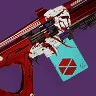 | 1 | S | 烈日 | 支援框架 | 24 | 苍白之心 |  | 54 | 全口径枪膛 | 精确弹药 | 射程 | 医治 燃烧野心 | 混沌重塑 羸弱能量球 辉耀炽热 | 庄家之选 | 最强治疗步枪 得益于起源特性 配合神器元素超充器可以快速回转火属性超能 |
| 永恒之尖 | 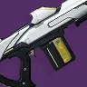 | 2 | S | 虚空 | 支援框架 | 27 | 永恒沙漠（史诗） | 51 | 全口径枪膛 | 精确弹药 | 射程 | 互惠 冲击支撑 羸弱能量球 | 枯萎凝视 失衡弹药 武器大师 | 参考框架 | 如果有医治的话会很强 一把枪可以同时用于续易伤 + 提供 10% 独立伤害加成 武器位利用率很好 | |
| 迪凯特 02 | 3 | S | 冰影 | 支援框架 | 29 | 扭曲 | 54 | 全口径枪膛 | 精确弹药 | 射程 | 医治 结晶残花 羸弱能量球 | 互惠 武器大师 转向 | 腐臭弹药 | 冰霜护甲不如恢复 但仍是动能位最佳选择 | ||
| 鲁莽神谕 众神殿版本 | 4 | S | 虚空 | 速射框架 | 29 | 众神殿 | 54 | 槽化枪管 箭头制退器 | 大口径弹药 合金弹匣 | 填装 | 失衡弹药 维度偏移 集体爆破 | 冲击支撑 混沌重塑 枯萎凝视 | 椭圆轨道 | 有所有能用的虚空 Perk+混沌重塑 综合表现优秀 | ||
| 痛苦的饥饿 | 5 | S | 虚空 | 适配框架 | 29 | 智谋 | 55 | 槽化枪管 箭头制退器 | 合金弹匣 | 填装 | 冲击支撑 枯萎凝视 | 失衡弹药 武器大师 | 边打边跑 | 框架比鲁莽神谕更好 起源一般 | ||
| 雷古斯克之誓 | 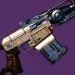 | 6 | S | 虚空 | 速射框架 | 28 | 铁旗 | 53 | 槽化枪管 箭头制退器 | 合金弹匣 | 填装 | 失衡弹药 即兴弹药 | 冲击支撑 羸弱能量球 黄金三角 | 藏匿之狼 | 基本就是鲁莽神谕多了几个 Perk + 起源不同 | |
| 光明前景 | 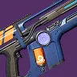 | 7 | S | 虚空 | 精密框架 | 29 | 火力战队行动 | 59 | 槽化枪管 箭头制退器 | 大口径弹药 合金弹匣 | 填装 | 冲击支撑 枯萎凝视 | 失衡弹药 超级杀戮弹匣 | 加速突击 | 不太理想的自动步枪框架 但 Perk 组合优秀 起源也还不错 | |
| 旧日羁绊 | 8 | S | 虚空 | 高冲击力框架 | 21 | 最后一愿 | 49 | 槽化枪管 箭头制退器 | 合金弹匣 | 填装 | 冲击支撑 巨脉蜻蜓 | 失衡弹药 集体行动 | 爆炸协议 | 框架优秀 经典虚空 Perk 组合 有双溅射 Perk 没有大口径弹药 而且起源很烂 | ||
| 鲁莽神谕 | 9 | S | 虚空 | 速射框架 | 25 | 救赎花园 | 54 | 槽化枪管 箭头制退器 | 大口径弹药 合金弹匣 | 填装 | 失衡弹药 维度偏移 | 冲击支撑 | 光抑制 | 整体很优秀的虚空自动步枪 虽并非最佳框架但核心 Perk 齐全 | ||
| 还击者 | 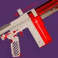 | 10 | S | 虚空 | 轻质框架 | 29 | 多人竞技 | 57 | 槽化枪管 箭头制退器 | 大口径弹药 合金弹匣 | 填装 | 冲击支撑 维度偏移 瓦解 | 失衡弹药 铤而走险 | 无 | Perk 搭配和框架都很强 只是没有起源 | |
| 红衣威尔 | 11 | A | 动能 | 适配框架 | 29 | 欧洲无人区 | 50 | 槽化枪管 箭头制退器 | 合金弹匣 | 填装 | 羸弱能量球 边打边劫 | 动能震颤 辅助炸药 | 老兵睿智 | 起源在合适的环境里很强 经典动能 Perk 组合 最佳框架 | ||
| 深渊叛逆 | 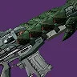 | 12 | A | 烈日 | 高冲击力框架 | 22 | 克洛塔的末日 | 52 | 槽化枪管 箭头制退器 | 大口径弹药 | 填装 | 燃烧野心 治疗弹匣 | 辉耀炽热 | 诅咒怨魂 | 双硬直组合 双溅射 Perk 不错 起源也优秀 | |
| 过去完成时 | 13 | A | 动能 | 高冲击力框架 | 29 | 涅索斯 | 50 | 槽化枪管 箭头制退器 | 大口径弹药 | 填装 | 阻止力 | 动能震颤 狂暴 | 致命失误 | 三种硬直组合都齐全 除此之外框架 4 号位和起源也都不错 | ||
| VS 热电推进 | 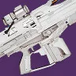 | 14 | A | 电弧 | 适配框架 | 29 | 晚星之主 | 50 | 槽化枪管 箭头制退器 | 大口径弹药 合金弹匣 | 填装 | 羸弱能量球 | 震颤反馈 换挡 | 布瑞遗产 | 框架 起源 溅射能力都优秀 只是杀伤力不如其他选择 | |
| 狙猎 Mk.47 | 15 | A | 电弧 | 轻质框架 | 29 | 快雀联赛 | 48 | 槽化枪管 箭头制退器 | 大口径弹药 合金弹匣 | 填装 | 震颤反馈 | 混沌重塑 伏特子弹 羸弱能量球 | 特克斯平衡枪托 | 电属性双溅射 Perk 没那么强 震颤反馈+混沌重塑较为独特 起源比较一般 | ||
| 金刚磐石 | 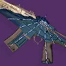 | 16 | A | 缚丝 | 支援框架 | 29 | 异端深渊 仄 | 54 | 全口径枪膛 | 精确弹药 | 射程 | 互惠 转向 切割 | 幼雏 撕裂 | 异端行径 | 医治完全没用 被迪凯特 02 爆了 可取之处只有切割 | |
| 极地雾霭 | 17 | A | 烈日 | 速射框架 | 29 | 木卫二 | 50 | 槽化枪管 箭头制退器 | 合金弹匣 | 填装 | 辉耀炽热 治疗弹匣 | 燃烧野心 狂暴 | 御寒装备 | 框架不错 有双溅射 Perk 但比虚空的弱 | ||
| 嗡鸣铁锭 | 18 | A | 烈日 | 精密框架 | 29 | 竞技场行动 | 50 | 槽化枪管 箭头制退器 | 大口径弹药 合金弹匣 | 填装 | 辉耀炽热 治疗弹匣 即兴弹药 | 燃烧野心 萤火虫 猛攻 | 煅炉眷属 | 伤害曲线不如极地雾霭 但起源特性更好 也有破屏障能力 | ||
| 第七炽天使卡宾枪 | 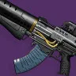 | 19 | A | 动能 | 精密框架 | 29 | 发射基地 | 51 | 槽化枪管 箭头制退器 | 六翼天使弹药 | 填装 | 羸弱能量球 阻止力 | 动能震颤 辅助炸药 | 注意了 | 可用六翼天使弹药 动能组合优秀 起源不错 框架还行 | |
| 光鳃之调 | 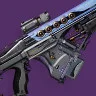 | 20 | A | 电弧 | 支援框架 | 29 | 破碎王座 | 48 | 全口径枪膛 | 精确弹药 | 射程 | 医治 震颤反馈 | 伏特子弹 羸弱能量球 | 劣迹斑斑 | 所有传说武器里唯一不靠分支职业获得增幅的手段 不俗的框架上还有双溅射 Perk | |
| 召唤灵师 | 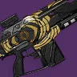 | 21 | A | 烈日 | 适配框架 | 29 | 试炼 | 51 | 槽化枪管 箭头制退器 | 大口径弹药 合金弹匣 | 填装 | 治疗弹匣 | 辉耀炽热 燃烧野心 | 万能卡牌 | 缺少双溅射 Perk 但作为烈日自动步枪其余方面综合优秀 | |
| 永燃炫目 | 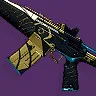 | 22 | A | 动能 | 速射框架 | 27 | 试炼 | 54 | 槽化枪管 箭头制退器 | 大口径弹药 合金弹匣 | 填装 | 羸弱能量球 迷惑爆发 | 动能震颤 辅助炸药 | 轻捷脚步 | 不错的产球枪 框架优秀 红衣威尔的降级版 | |
| 起源故事 | 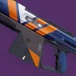 | 23 | B | 动能 | 精密框架 | 29 | 萨瓦拉 | 47 | 槽化枪管 箭头制退器 | 大口径弹药 合金弹匣 | 填装 | 羸弱能量球 | 动能震颤 | 先锋决心 | 经典羸弱能量球+动能震颤组合 框架不错 起源尚可 | |
| 虎怨 | 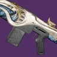 | 24 | B | 动能 | 精密框架 | 29 | 幽梦之城 | 49 | 槽化枪管 箭头制退器 | 大口径弹药 合金弹匣 | 填装 | 迷惑爆发 阻止力 边打边劫 | 动能震颤 | 高级反射 | 类似炫彩突袭 但框架可反屏障 起源差不多 也有大口径弹药 | |
| 炫彩突袭 | 25 | B | 动能 | 速射框架 | 29 | 世界掉落 枪匠 | 54 | 槽化枪管 箭头制退器 | 合金弹匣 | 填装 | 迷惑爆发 阻止力 | 动能震颤 辅助炸药 | 熔岩激涌 | 框架不错 起源一般 没有羸弱能量球 还缺一些东西 | ||
| 狂热理想 | 26 | B | 烈日 | 平衡热量武器 | 28 | 平衡 | 58 | 槽化枪管 | 强化散热器 | 冷却效率 | 治疗弹匣 羸弱能量球 | 辉耀炽热 燃烧野心 | 帝国效忠 | 缺少双溅射 Perk 框架还行 起源特性不算好 | ||
| 活性祈福 IV | 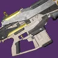 | 27 | B | 虚空 | 适配框架 | 23 | 枪匠 | 54 | 槽化枪管 箭头制退器 | 合金弹匣 | 填装 | 冲击支撑 | 猛攻 羸弱能量球 黄金三角 | 万能卡牌 | 如果能用 失衡弹药 ilizing 会很强 框架好 起源优秀 还有神器选项 | |
| 前进之道 | 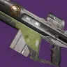 | 28 | B | 缚丝 | 适配框架 | 29 | 铁旗 | 60 | 槽化枪管 箭头制退器 | 广口弹匣 合金弹匣 | 填装 | 切割 | 撕裂 幼雏 | 藏匿之狼 | 不错的缚丝自动步枪 最佳框架 好起源 缚丝 Perk 也不错 | |
| 致命丰裕 | 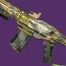 | 29 | B | 缚丝 | 高冲击力框架 | 29 | 铁旗 | 51 | 槽化枪管 箭头制退器 | 广口弹匣 合金弹匣 | 填装 | 撕裂 切割 | 幼雏 铤而走险 我为人人 | 藏匿之狼 | 弱框架 + 好的 3 号位 + 过得去的 4 号位 | |
| 实现 | 30 | B | 电弧 | 高冲击力框架 | 16 | 萨瓦图恩的王座世界 | 54 | 槽化枪管 箭头制退器 | 合金弹匣 | 填装 | 超充弹匣 边打边劫 | 震颤反馈 | 心灵骇入 | 起源和框架优秀 但没有双硬直组合 3 号位也一般 | ||
| 鲁弗斯的狂怒 | 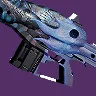 | 31 | B | 缚丝 | 速射框架 | 20 | 梦魇根源 | 60 | 槽化枪管 箭头制退器 | 大口径弹药 合金弹匣 | 填装 | 切割 | 混沌重塑 幼雏 | 和谐回声 | 不错的单体向自动步枪 除此之外不太好 | |
| 金耀禁能者 | 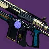 | 32 | B | 缚丝 | 精密框架 | 27 | 试炼 | 50 | 槽化枪管 箭头制退器 | 大口径弹药 合金弹匣 | 填装 | 幼雏 切割 | 撕裂 铤而走险 猛攻 | Omolon 流体动力 | 有溅射+伤害选项 但相比 B 梯队的其他选择较弱 | |
| 闰蚀 | 33 | C | 冰影 | 适配框架 | 27 | 永恒沙漠 | 57 | 槽化枪管 箭头制退器 | 大口径弹药 合金弹匣 | 填装 | 墓碑 | 铤而走险 霜华窃取者 我为人人 | 参考框架 | 最佳框架 可用大口径弹药 同时有溅射 + 单体伤害 | ||
| 潮人 | 34 | C | 电弧 | 适配框架 | 29 | 世界掉落 枪匠 | 60 | 槽化枪管 箭头制退器 | 合金弹匣 | 填装 | 超充弹匣 光能之触 | 震颤反馈 风暴涌动 换挡 | 锤子敲钉 | 最佳框架但 3 号位很一般 电溅射 Perk 偏弱 起源也偏门 | ||
| 检察官 玖的仪式版本 | 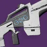 | 35 | C | 电弧 | 精密框架 | 26 | 60 | 槽化枪管 箭头制退器 | 大口径弹药 合金弹匣 | 填装 | 羸弱能量球 蜻蜓 | 伏特子弹 | 重力井 | 中庸的双溅射 Perk 框架还行 可用重力井 | ||
| 暗影代价 | 36 | C | 电弧 | 精密框架 | 29 | 萨瓦拉 | 48 | 槽化枪管 箭头制退器 | 广口弹匣 合金弹匣 | 填装 | 羸弱能量球 | 伏特子弹 | 先锋决心 | 羸弱能量球+伏特子弹 起源尚可 框架还行 | ||
| 忧伤韵文 | 37 | C | 电弧 | 适配框架 | 29 | 熔炉竞技场 | 49 | 槽化枪管 箭头制退器 | 广口弹匣 合金弹匣 | 填装 | 已回收能量 回转弹药 | 伏特子弹 | 加速突击 | 最佳框架 没有双溅射 Perk 起源不错 | ||
| 面纱威胁 | 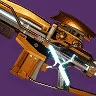 | 38 | C | 冰影 | 速射框架 | 24 | 周而复始 | 54 | 槽化枪管 箭头制退器 | 广口弹匣 合金弹匣 | 填装 | 羸弱能量球 边打边劫 | 墓碑 铤而走险 | 活性放射体液转换器 | 羸弱+墓碑 + 优秀起源 + 好框架 可惜是冰属性 | |
| 赐予者的祝福 | 39 | C | 动能 | 速射框架 | 27 | 开普勒 | 57 | 槽化枪管 箭头制退器 | 大口径弹药 合金弹匣 | 填装 | 回转弹药 边打边劫 即兴弹药 | 动能震颤 | 详尽研究 | 3 号位很令人失望 框架不错 起源特性不太好 | ||
| 检察官 | 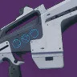 | 40 | C | 电弧 | 精密框架 | 29 | 预言 | 60 | 槽化枪管 箭头制退器 | 大口径弹药 合金弹匣 | 填装 | 蜻蜓 启迪行动 | 伏特子弹 换挡 | 混合弹匣 | 双溅射 Perk 一般 框架还行 没有重力井 | |
| 亚哈焦痕 | 41 | C | 烈日 | 速射框架 | 27 | 忠诚纪念碑 枪匠 | 52 | 槽化枪管 箭头制退器 | 大口径弹药 合金弹匣 | 填装 | 治疗弹匣 | 燃烧野心 | 布瑞遗产 | 整体配置优秀 只是 4 号位缺少可靠的溅射 Perk | ||
| 电弧逻辑 | 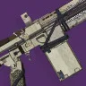 | 42 | C | 电弧 | 适配框架 | 29 | 月球 | 49 | 槽化枪管 箭头制退器 | 合金弹匣 | 填装 | 风暴涌动 超充弹匣 | 震颤反馈 换挡 | 减员激励 | 3 号位令人失望 4 号位不错 起源差 框架好 | |
| 极速快感 | 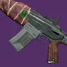 | 43 | C | 动能 | 精密框架 | 29 | 智谋 | 45 | 槽化枪管 箭头制退器 | 大口径弹药 合金弹匣 | 填装 | 启迪行动 边打边劫 | 动能震颤 | 边打边跑 | 框架不错但没有好东西配动能震颤 起源也不怎么样 | |
| 布瑞科技狼人 | 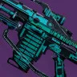 | 44 | C | 动能 | 精密框架 | 25 | 55 | 槽化枪管 箭头制退器 | 大口径弹药 合金弹匣 | 填装 | 回转弹药 拳击手 | 动能震颤 | 搜索队 | 基本就是更差的极速快感 | ||
| 公平审判 | 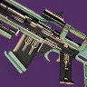 | 45 | D | 冰影 | 精密框架 | 29 | 单人行动 | 51 | 槽化枪管 箭头制退器 | 大口径弹药 合金弹匣 | 填装 | 霜华窃取者 解构 | 墓碑 | 先锋决心 | 很中庸的墓碑自动步枪 框架和起源都没特别之处 | |
| 钢羽中继器 | 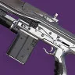 | 46 | D | 动能 | 速射框架 | 29 | 世界掉落 枪匠 | 53 | 槽化枪管 箭头制退器 | 大口径弹药 合金弹匣 | 填装 | 迷惑爆发 | 辅助炸药 | 光照无影 | 糟糕的 Perk 起源也不适合该武器类型 | |
| 赫沃斯托夫 7G-02 | 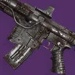 | 47 | D | 动能 | 适配框架 | 24 | 苍白之心 | 46 | 锻造膛线 | 合金弹匣 | 填装 | 爆破专家 拳击手 战略家 | 羸弱能量球 | 庄家之选 | 框架好且能用羸弱能量球 也是 庄家之选 套装一员 但完全没有溅射 Perk | |
| 老旧纯银 | 48 | D | 缚丝 | 适配框架 | 21 | 枪匠 | 54 | 槽化枪管 箭头制退器 | 广口弹匣 合金弹匣 | 填装 | 回转弹药 | 幼雏 | 战场检验 | 最佳框架 3 号位糟糕 起源尚可 | ||
| 希律-C | 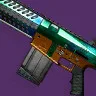 | 49 | D | 冰影 | 高冲击力框架 | 29 | 智谋 | 51 | 槽化枪管 箭头制退器 | 大口径弹药 合金弹匣 | 填装 | 边打边劫 全面提升 | 墓碑 | Häkke 突入武装 | 有双硬直组合 整体只是普通的冰影自动步枪 框架不错 | |
| 虚假承诺 | 50 | D | 冰影 | 高冲击力框架 | 26 | 仄 | 54 | 槽化枪管 箭头制退器 | 大口径弹药 合金弹匣 | 填装 | 启迪行动 | 墓碑 | 超因果流体 | 可用大口径弹药+高冲击力框架硬直组合 其他方面非常一般 | ||
| 使命羁绊 | 51 | D | 动能 | 适配框架 | 28 | 忠诚纪念碑 萨瓦拉 | 58 | 槽化枪管 箭头制退器 | 合金弹匣 | 填装 | 迷惑爆发 阻止力 | 狂暴 猛攻 | 加速突击 | 没动能震颤或辅助炸药 也没有羸弱能量球 框架和起源不错 但缺少好 Perk | ||
| 黑暗决策者 | 52 | D | 电弧 | 速射框架 | 20 | 铁旗 | 54 | 槽化枪管 箭头制退器 | 大口径弹药 合金弹匣 | 填装 | 自动填装枪套 维持生计 | 伏特子弹 | 藏匿之狼 | 3 号位糟糕 框架还行 起源不错 整体很差 | ||
| 葬歌-22 | 53 | D | 烈日 | 适配框架 | 20 | 枪匠 | 51 | 槽化枪管 箭头制退器 | 大口径弹药 合金弹匣 | 填装 | 喂食狂热 | 辉耀炽热 | Suros 协同 | 唯一亮点就是辉耀炽热 | ||
| 恐怖故事 | 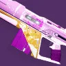 | 54 | D | 冰影 | 精密框架 | 22 | 忠诚纪念碑 | 47 | 槽化枪管 箭头制退器 | 合金弹匣 | 填装 | 爆破专家 启迪行动 | 墓碑 | 绝路专注 | 框架不错 3 号位差 起源差 | |
| 金环蛇 | 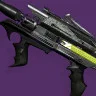 | 55 | D | 冰影 | 速射框架 | 16 | 枪匠 | 45 | 槽化枪管 箭头制退器 | 大口径弹药 合金弹匣 | 填装 | 全面提升 | 墓碑 | Veist 尖刺 | 3 号位很差 框架和起源还行 没别的亮点 | |
| 恒久 | 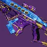 | 56 | D | 缚丝 | 适配框架 | 20 | 阿瓦隆 | 54 | 槽化枪管 箭头制退器 | 广口弹匣 合金弹匣 | 填装 | 嫉妒刺客 | 幼雏 | 高尚事迹 | 3 号位很差 溅射 Perk 一般 起源中等 框架不错 | |
| 阿米特 AR2 | 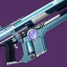 | 57 | D | 烈日 | 精密框架 | 18 | 枪匠 | 48 | 槽化枪管 箭头制退器 | 大口径弹药 合金弹匣 | 填装 | 刺客野心 全面提升 | 辉耀炽热 我为人人 | Omolon 流体动力 | 最差的辉耀炽热自动步枪 | |
| 甜蜜忧愁 | 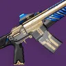 | 58 | E | 电弧 | 速射框架 | 16 | 暗屋之声 | 53 | 槽化枪管 箭头制退器 | 广口弹匣 合金弹匣 | 填装 | 全面提升 | 我为人人 | 陆地坦克 | 完全没有溅射 Perk 起源优秀 框架不错 但其他都很差 | |
| 临终之息 | 59 | E | 动能 | 适配框架 | 15 | 52 | 槽化枪管 箭头制退器 | 大口径弹药 合金弹匣 | 填装 | 爆破专家 | 狂乱 我为人人 | 无 | Perk 池极度过时 框架虽好也完全救不回来 | |||
| 洛德布罗克-C | 60 | E | 动能 | 高冲击力框架 | 19 | 枪匠 | 46 | 槽化枪管 箭头制退器 | 大口径弹药 合金弹匣 | 填装 | 爆破专家 | 杀戮弹匣 肾上腺素成瘾 | Häkke 突入武装 | 完全过时 不过理论上有双硬直组合 | ||
| 烈火惊骇 | 61 | E | 动能 | 精密框架 | 17 | 前兆 | 54 | 槽化枪管 箭头制退器 | 大口径弹药 合金弹匣 | 填装 | 威胁探测 | 腹背受敌 | 外向活泼 | 除了起源特性外全面垃圾 | ||
| 唯一数 | 62 | E | 电弧 | 精密框架 | 14 | 仄 | 60 | 槽化枪管 箭头制退器 | 大口径弹药 合金弹匣 | 填装 | 沙场备战 | 我为人人 | 无 | 沙场备战理论上能提供弹药生成 但除此之外完全没救 |
弓箭
| 武器 | 图标 | 排名 | 评级 | 属性 | 框架 | 赛季 | 来源 | 勇士 | 弹药生成 | 枪管 | 弹匣 | 大师 | Perk 1 | Perk 2 | 起源特性 | 注解 |
|---|---|---|---|---|---|---|---|---|---|---|---|---|---|---|---|---|
| 刺骨寒风 | 1 | S | 动能 | 精密框架 | 29 | 木卫二 | 54 | 弹性弓弦 | 精巧箭杆 | 蓄力时间 | 迷惑爆发 即兴弹药 | 动能震颤 | 御寒装备 | 迷惑爆发这个 Perk 在大多数武器上效果并不好 但在弓箭上却非常出色 | ||
| 恶意尖牙 | 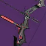 | 2 | S | 冰影 | 轻质框架 | 29 | 竞技场行动 | 66 | 弹性弓弦 | 精巧箭杆 | 蓄力时间 | 墓碑 霜华窃取者 | 萤火虫 结晶残花 | 煅炉眷属 | 冰火 Perk 组合 起源也很好 只是不是最好的框架 | |
| 牡鹿之角 | 3 | S | 电弧 | 精密框架 | 29 | 铁旗 | 53 | 弹性弓弦 | 精巧箭杆 | 蓄力时间 | 蜻蜓 | 伏特子弹 弓手的智谋 | 藏匿之狼 | 起源更好的终焉未至 | ||
| 终焉未至 | 4 | S | 电弧 | 精密框架 | 24 | 救赎的边缘 | 58 | 弹性弓弦 | 精巧箭杆 | 蓄力时间 | 蜻蜓 小试牛刀 边打边劫 | 伏特子弹 混沌重塑 巨脉蜻蜓 | 集体使命 | Perk 多样有趣 但比牡鹿之角差 | ||
| 累积救赎 | 5 | A | 动能 | 精密框架 | 25 | 救赎花园 | 60 | 弹性弓弦 | 精巧箭杆 | 蓄力时间 | 羸弱能量球 | 动能震颤 弓手的智谋 | 光抑制 | 经典的羸弱能量球+动能震颤组合 框架不错 起源也还可以 | ||
| 幸运星 | 6 | A | 虚空 | 轻质框架 | 27 | 忠诚纪念碑 | 70 | 弹性弓弦 | 精巧箭杆 | 蓄力时间 | 冲击支撑 蜻蜓 即兴弹药 | 失衡弹药 瓦解 弓手的智谋 | Veist 尖刺 | 经典的虚空组合 但起源特性和框架也不是最好的 | ||
| 记忆犹新 | 7 | A | 虚空 | 轻质框架 | 26 | 仄 | 62 | 弹性弓弦 | 精巧箭杆 | 蓄力时间 | 冲击支撑 蜻蜓 | 失衡弹药 瓦解 邪剑守则 | 火力满溢 | 本质和幸运星一样 只是起源更差 | ||
| 噤声 | 8 | A | 烈日 | 精密框架 | 29 | 智谋 | 55 | 弹性弓弦 | 精巧箭杆 | 蓄力时间 | 燃烧野心 萤火虫 | 辉耀炽热 巨脉蜻蜓 弓手的智谋 | 边打边跑 | 比城主 IV 的 Perk 更多样 但起源更差 | ||
| 城主 IV | 9 | A | 烈日 | 精密框架 | 27 | 忠诚纪念碑 萨瓦拉 | 53 | 弹性弓弦 | 精巧箭杆 | 蓄力时间 | 辉耀炽热 萤火虫 | 燃烧野心 | 万能卡牌 | 同位置最佳的双溅射火弓 | ||
| 天堂暴政 | 10 | A | 烈日 | 轻质框架 | 21 | 最后一愿 | 68 | 弹性弓弦 | 精巧箭杆 | 蓄力时间 | 燃烧野心 巨脉蜻蜓 | 辉耀炽热 弓手的智谋 | 爆炸协议 | 不错的双火溅射 Perk 只是框架比 A 梯队的其他选择差 | ||
| 复仇低语 | 11 | A | 缚丝 | 精密框架 | 29 | 战争领主的废墟 | 53 | 弹性弓弦 | 精巧箭杆 | 蓄力时间 | 撕裂 切割 爆炸箭头 | 巨脉蜻蜓 幼雏 弓手的智谋 | 分离 | 兼具功能性和溅射 Perk 但起源不太有用 | ||
| 召集反曲弓 | 12 | B | 虚空 | 高冲击力长弓 | 29 | 火力战队行动 | 41 | 弹性弓弦 | 精巧箭杆 | 蓄力时间 | 冲击支撑 维度偏移 枯萎凝视 | 失衡弹药 瓦解 | 加速突击 | 整体非常不错 只是拉弓时间长所女戈人框架一般 | ||
| 奥菲欧王 | 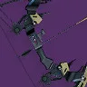 | 13 | B | 电弧 | 精密框架 | 28 | 忠诚纪念碑 | 52 | 弹性弓弦 | 精巧箭杆 | 蓄力时间 | 爆炸箭头 边打边劫 | 巨脉蜻蜓 震颤反馈 | 锤子敲钉 | 唯一一把震颤反馈的弓箭 整体还不错 只是 3 号位表现平平 | |
| 噤声低语 | 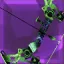 | 14 | B | 缚丝 | 精密框架 | 27 | 忠诚纪念碑 | 49 | 弹性弓弦 | 精巧箭杆 | 蓄力时间 | 撕裂 切割 | 幼雏 弓手的智谋 | 万能卡牌 | 在一把弓上有撕裂这个 Perk 挺有趣的 但仍受到属性是缚丝的限制 | |
| 水星-A | 15 | B | 动能 | 高冲击力长弓 | 27 | 忠诚纪念碑 萨瓦拉 | 50 | 弹性弓弦 | 精巧箭杆 | 蓄力时间 | 羸弱能量球 小试牛刀 | 动能震颤 | 坚韧 | 被累积补偿爆了 | ||
| 遗忘恐惧症 | 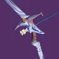 | 16 | B | 虚空 | 轻质框架 | 23 | 苦命鸳鸯 | 63 | 弹性弓弦 | 精巧箭杆 | 蓄力时间 | 冲击支撑 脉冲增幅器 | 爆炸箭头 | 龙之复仇 | 理论上可以通过神器吃到冲击支撑 但除此之外表现平庸 | |
| 绊索金丝雀 | 17 | C | 电弧 | 轻质框架 | 19 | 炽天使之盾 | 63 | 弹性弓弦 | 精巧箭杆 | 蓄力时间 | 蜻蜓 | 爆炸箭头 | 伏击 | 很弱的双溅射 Perk 组合 | ||
| 砷毒噬咬-4b | 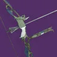 | 18 | C | 电弧 | 轻质框架 | 4 | 仄 永恒挑战 | 70 | 弹性弓弦 | 精巧箭杆 | 蓄力时间 | 蜻蜓 | 爆炸箭头 | 无 | 类似绊索金丝雀但没有起源 | |
| 善谈者 | 19 | C | 冰影 | 精密框架 | 20 | 阿瓦隆 | 54 | 弹性弓弦 | 精巧箭杆 | 蓄力时间 | 弓手节奏 边打边劫 | 墓碑 爆炸箭头 | 高尚事迹 | 与同时期的其他弓箭相比 Perk 较为多样 | ||
| 尖锐汽笛 | 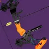 | 20 | C | 烈日 | 精密框架 | 17 | 萨瓦拉 | 59 | 弹性弓弦 | 精巧箭杆 | 蓄力时间 | 弓手节奏 边打边劫 | 辉耀炽热 | 先锋平反 | 弓手节奏+辉耀炽热的组合过时了 | |
| 切肤之痛 | 21 | C | 虚空 | 精密框架 | 16 | 暗屋之声 | 51 | 弹性弓弦 | 精巧箭杆 | 蓄力时间 | 弓手节奏 | 爆炸箭头 蜻蜓 | 陆地坦克 | 来源优秀 但 Perk 分布非常过时 | ||
| 恶魔谎言 | 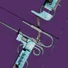 | 22 | C | 动能 | 轻质框架 | 16 | 泉源 | 59 | 弹性弓弦 | 精巧箭杆 | 蓄力时间 | 弓手节奏 边打边劫 | 爆炸箭头 | 心灵骇入 | 起源和切肤之痛差不多 但用边打边劫代替蜻蜓 | |
| 狼音弦 | 23 | C | 电弧 | 精密框架 | 15 | 仄 永恒挑战 | 55 | 弹性弓弦 | 精巧箭杆 | 蓄力时间 | 弓手节奏 边打边劫 | 蜻蜓 | 无 | 非常弱的溅射 Perk | ||
| 卢努拉塔-4b | 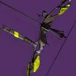 | 24 | D | 冰影 | 轻质框架 | 17 | 枪匠 | 64 | 弹性弓弦 | 精巧箭杆 | 蓄力时间 | 边打边劫 | 墓碑 | Veist 尖刺 | 没有弓手节奏 + 溅射 Perk 较弱 | |
| 尼奥普托列墨斯 II | 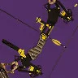 | 25 | D | 动能 | 精密框架 | 25 | 枪匠 | 54 | 弹性弓弦 | 精巧箭杆 | 蓄力时间 | 空中扳机 | 泉源 | 万能卡牌 | 起源是唯一值得称道的优点 | |
| 低语石台 | 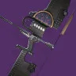 | 26 | D | 动能 | 轻质框架 | 26 | 仄 | 59 | 弹性弓弦 | 精巧箭杆 | 蓄力时间 | 弓手节奏 爆破专家 | 高地 | 超因果流体 | 有对单 Perk | |
| 帝国之针 | 27 | D | 虚空 | 轻质框架 | 13 | 仄 永恒挑战 | 60 | 弹性弓弦 | 精巧箭杆 | 蓄力时间 | 弓手节奏 | 狂乱 | 无 | 弓箭手+弱伤害 Perk | ||
| 吹哨人的奇想 | 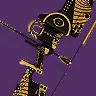 | 28 | D | 动能 | 轻质框架 | 20 | 试炼 | 64 | 弹性弓弦 | 精巧箭杆 | 蓄力时间 | 快速命中 逼入绝境 | 弓手节奏 杀戮弹匣 小试牛刀 | Veist 尖刺 | 有对单 Perk |
手炮
| 武器 | 图标 | 排名 | 评级 | 属性 | 框架 | 赛季 | 来源 | 勇士 | 弹药生成 | 枪管 | 弹匣 | 大师 | Perk 1 | Perk 2 | 起源特性 | 注解 |
|---|---|---|---|---|---|---|---|---|---|---|---|---|---|---|---|---|
| 绽放兰花 | 1 | S | 虚空 | 适配框架 | 29 | 竞技场行动 | 60 | 槽化枪管 | 合金弹匣 | 填装 | 冲击支撑 边打边劫 杀戮弹匣 | 失衡弹药 高爆载荷 瓦解 | 煅炉眷属 | 游戏里最好的「传统」140 手炮 此外还有边打+高爆 | ||
| 艾恩伍德 03 | 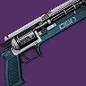 | 2 | S | 虚空 | 散射 | 29 | 扭曲 | 50 | 枪管套筒 | 合金弹匣 | 填装 | 冲击支撑 维度偏移 爆破专家 | 失衡弹药 腹背受敌 集体行动 | 腐臭弹药 | 最强伤害曲线之一 几乎所有相关的虚空 Perk 都有 优秀的起源 | |
| 克洛塔之语 | 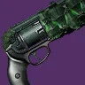 | 3 | S | 虚空 | 精密框架 | 22 | 克洛塔的末日 | 52 | 槽化枪管 | 合金弹匣 | 填装 | 冲击支撑 蜻蜓 集体爆破 | 失衡弹药 武器大师 | 诅咒怨魂 | 整体优秀 依赖配装的强起源特性优秀 框架比绽放兰花好 但可能大部分人不喜欢它的手感 | |
| 崇高真理 | 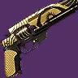 | 4 | S | 虚空 | 适配框架 | 29 | 试炼 | 58 | 槽化枪管 | 合金弹匣 | 填装 | 失衡弹药 枯萎凝视 | 冲击支撑 | 轻捷脚步 | 不突出 但框架好+经典虚空组合 起源差 也是唯一的枯萎凝视选项 | |
| 改装 B-7 手枪 | 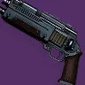 | 5 | S | 冰影 | 动态热量武器 | 28 | 反叛 | 54 | 槽化枪管 | 强化散热器 | 冷却效率 | 萤火虫 | 墓碑 结晶残花 | 加速突击 | 最强双冰影溅射 Perk 组合 框架优秀 起源优秀 | |
| 扎乌利的克星 众神殿版本 | 6 | S | 烈日 | 适配框架 | 29 | 众神殿 | 50 | 槽化枪管 | 合金弹匣 | 填装 | 萤火虫 高爆载荷 燃烧野心 | 巨脉蜻蜓 辉耀炽热 混沌重塑 | 椭圆轨道 | 最强烈日双溅射 Perk 起源优秀 框架优秀 | ||
| 扎乌利的克星 | 7 | S | 烈日 | 适配框架 | 18 | 国王的陨落 | 50 | 槽化枪管 | 合金弹匣 | 填装 | 转向 高爆载荷 | 辉耀炽热 巨脉蜻蜓 混沌重塑 | 火力满溢 | 转向搭配很有趣 Perk 组合杀伤力高 但缺少续航 | ||
| 划时代整合 | 8 | S | 烈日 | 适配框架 | 29 | 内欧姆那 | 54 | 槽化枪管 | 合金弹匣 | 填装 | 高爆载荷 治疗弹匣 | 巨脉蜻蜓 辉耀炽热 混沌重塑 | 纳米技术追踪导弹 | 基本就是起源更好但没有转向的扎乌利 | ||
| 鹰月 | 9 | S | 冰影 | 适配框架 | 29 | 贪婪之握 | 54 | 槽化枪管 | 大口径弹药 合金弹匣 | 填装 | 萤火虫 巨脉蜻蜓 | 墓碑 结晶残花 混沌重塑 | 宝藏现世 | Perk 组合和改装 B-7 相同 多了巨脉蜻蜓/混沌重塑 伤害曲线更差 | ||
| 刚玉战锤 | 10 | A | 缚丝 | 适配框架 | 28 | 试炼 | 51 | 槽化枪管 | 合金弹匣 | 填装 | 萤火虫 边打边劫 切割 | 撕裂 高爆载荷 | 轻捷脚步 | 以缚丝手炮来说双溅射 Perk 不错 框架优秀 还有 边打边劫+高爆 | ||
| 星狐座 | 11 | A | 冰影 | 精密框架 | 29 | 破碎王座 | 52 | 槽化枪管 | 合金弹匣 | 填装 | 墓碑 边打边劫 | 结晶残花 高爆载荷 | 劣迹斑斑 | 好框架加上双水晶组合和边打边劫+高爆 但起源一般 | ||
| 忠侍左轮 | 12 | A | 动能 | 精密框架 | 29 | 火力战队行动 | 48 | 槽化枪管 | 合金弹匣 | 填装 | 边打边劫 阻止力 | 高爆载荷 动能震颤 | 加速突击 | 动能溅射 Perk 不算好 不过在 180 上有边打边劫+高爆 | ||
| 无爱 | 13 | A | 缚丝 | 重型点射 | 29 | 分离教义 | 60 | 槽化枪管 | 大口径弹药 合金弹匣 | 填装 | 幼雏 蜻蜓 | 撕裂 狂乱 | 征服 | 双溅射 Perk 较弱 但框架不错+优秀的起源特性 | ||
| 野兽国度 | 14 | A | 电弧 | 适配框架 | 21 | 最后一愿 | 51 | 槽化枪管 | 合金弹匣 | 填装 | 换挡 蜻蜓 | 震颤反馈 高爆载荷 伏特子弹 | 爆炸协议 | 电弧溅射/单体组合 但起源一般 | ||
| 庄严追忆 | 15 | A | 冰影 | 精密框架 | 27 | 熔炉竞技场 | 55 | 槽化枪管 | 合金弹匣 | 填装 | 墓碑 | 萤火虫 | 无 | 虽然是 180 但是是适配框架的伤害曲线 没有起源 但有经典冰影双溅射 Perk 组合 | ||
| 月之狂嚎 | 16 | A | 烈日 | 精密框架 | 29 | 猛攻 | 60 | 槽化枪管 | 大口径弹药 合金弹匣 | 填装 | 萤火虫 治疗弹匣 | 辉耀炽热 混沌重塑 | 不屈不挠 | 双溅射 Perk 不错 框架优秀 起源不错 | ||
| 命运终结者 | 17 | A | 动能 | 适配框架 | 26 | 玻璃拱顶 | 53 | 槽化枪管 | 合金弹匣 | 填装 | 高爆载荷 动能震颤 阻止力 | 萤火虫 我为人人 | 失时弹匣 | 不是最好的双溅射 Perk 但起源和框架优秀 除此之外不是特别亮眼 | ||
| 午夜政变 | 18 | A | 动能 | 适配框架 | 29 | 猛攻 | 60 | 槽化枪管 | 合金弹匣 | 填装 | 萤火虫 高爆载荷 边打边劫 | 动能震颤 辅助炸药 我为人人 | 不屈不挠 | 推出时动能组合还算新颖 框架优秀 但不算惊艳 | ||
| 三冠得主 | 19 | A | 冰影 | 散射 | 28 | 忠诚纪念碑 | 56 | 枪管套筒 | 合金弹匣 | 填装 | 结晶残花 | 混沌重塑 战嚎炮管 | Häkke 突入武装 | 对于以水晶为基础的配装来说很不错 框架优秀 起源+结晶残花 搭配很好 | ||
| 信任 | 20 | A | 烈日 | 精密框架 | 29 | 智谋 | 60 | 槽化枪管 | 合金弹匣 | 填装 | 萤火虫 | 辉耀炽热 高爆载荷 | 边打边跑 | 有双溅射 Perk 和不错框架 但 Perk 多样性少 起源也差 | ||
| 后代 | 21 | A | 电弧 | 精密框架 | 12 | 深岩墓室 | 53 | 槽化枪管 | 合金弹匣 | 填装 | 伏特子弹 | 转向 高爆载荷 | 布瑞遗产 | 可能是最佳伏特子弹手炮 但杀伤力低于其他溅射组合 | ||
| 金质消除者 | 22 | B | 动能 | 散射 | 27 | 试炼 | 60 | 枪管套筒 | 合金弹匣 | 填装 | 盗墓者 斩首武器 | 战嚎炮管 级联点 铤而走险 | Häkke 突入武装 | 适合搭配幸运裤 除此之外用途不多 | ||
| 马赫斯 HC4 | 23 | B | 虚空 | 重型点射 | 29 | 枪匠 | 50 | 槽化枪管 | 合金弹匣 | 填装 | 冲击支撑 | 失衡弹药 黄金三角 狂乱 | Omolon 流体动力 | 框架不错 舒适度不是很好 经典虚空组合 起源差 | ||
| 第七炽天使军官左轮 | 24 | B | 动能 | 精密框架 | 29 | 发射基地 | 52 | 槽化枪管 | 六翼天使弹药 | 填装 | 迷惑爆发 边打边劫 | 高爆载荷 | 注意了 | 常态方面基本是更差的忠侍左轮 有边打边劫+高爆 | ||
| 大胆终末 | 25 | B | 冰影 | 重型点射 | 24 | 苍白之心 | 49 | 槽化枪管 | 合金弹匣 | 填装 | 墓碑 霜华窃取者 | 结晶残花 | 庄家之选 | 起源不错 框架还行 有双水晶组合 | ||
| 圣爱 | 26 | B | 烈日 | 重型点射 | 27 | 开普勒 | 55 | 槽化枪管 | 大口径弹药 合金弹匣 | 填装 | 治疗弹匣 | 辉耀炽热 萤火虫 燃烧野心 | 详尽研究 | 框架不错 不太适合用治疗弹匣 溅射 Perk 尚可 | ||
| 上古福音 | 27 | B | 虚空 | 适配框架 | 25 | 救赎花园 | 57 | 槽化枪管 | 合金弹匣 | 填装 | 失衡弹药 冲击支撑 | 高爆载荷 瓦解 | 光抑制 | 除了缺少完整虚空 Perk 组合外并不差 框架优秀 起源不错 | ||
| 萨耳珀冬-D | 28 | B | 电弧 | 散射 | 28 | 忠诚纪念碑 萨瓦拉 | 52 | 枪管套筒 | 合金弹匣 | 填装 | 即兴弹药 光中藏弹 | 战嚎炮管 雪上加霜 铤而走险 | 加速突击 | 有吸引力的 Perk 不多 框架不错但本质只是单体枪 | ||
| 巴西游走蛛 | 29 | B | 烈日 | 散射 | 27 | 忠诚纪念碑 | 56 | 槽化枪管 | 合金弹匣 | 填装 | 滑行射击 威胁移除器 | 辉耀炽热 腹背受敌 雪上加霜 | 坚韧 | 情况类似萨耳珀冬-D 但 3 号位更差 | ||
| 视野勘察 | 30 | B | 电弧 | 精密框架 | 24 | 周而复始 | 52 | 槽化枪管 | 合金弹匣 | 填装 | 启迪行动 空中扳机 | 伏特子弹 | 活性放射体液转换器 | 框架 + 起源优秀 但 3 号位令人失望 而且伏特子弹在手炮上不算好 | ||
| 备用口粮 | 31 | B | 冰影 | 轻质框架 | 29 | 智谋 | 57 | 槽化枪管 | 合金弹匣 | 填装 | 萤火虫 结晶残花 | 高爆载荷 | 边打边跑 | 4 号位不太好 是 140 却没有反屏障 起源也一般 | ||
| 死从天降 | 32 | B | 动能 | 适配框架 | 29 | 巅峰行动 | 58 | 槽化枪管 | 合金弹匣 | 填装 | 高爆载荷 | 羸弱能量球 | 加速突击 | 冷门产球枪（比多机系统 CCX 快 只要 4 发）其他用途不多 | ||
| 洪亮摇篮曲 | 33 | B | 冰影 | 攻击型框架 | 29 | 月球 | 48 | 槽化枪管 | 合金弹匣 | 填装 | 墓碑 霜华窃取者 边打边劫 | 结晶残花 高爆载荷 | 减员激励 | 冰影水晶双溅射 Perk 但攻击型框架 + 糟糕的起源 | ||
| 玫瑰 | 34 | B | 动能 | 轻质框架 | 29 | 多人竞技 | 58 | 槽化枪管 | 合金弹匣 | 填装 | 萤火虫 | 高爆载荷 | 无 | 略为过时的动能溅射 Perk 组合 没有起源 框架不错 | ||
| 烈焰之锤 | 35 | B | 烈日 | 攻击型框架 | 29 | 试炼 | 55 | 槽化枪管 | 大口径弹药 合金弹匣 | 填装 | 萤火虫 治疗弹匣 | 辉耀炽热 | 轻捷脚步 | 最差框架和糟糕起源 只剩烈日双溅射 Perk 了 | ||
| 莫斯熔炉 IV | 36 | B | 虚空 | 攻击型框架 | 28 | 忠诚纪念碑 沙克斯 | 52 | 槽化枪管 | 大口径弹药 合金弹匣 | 填装 | 失衡弹药 | 瓦解 | 加速突击 | 最差框架 没有冲击支撑 有双虚空溅射 Perk 起源不错 | ||
| 祈愿 | 37 | C | 虚空 | 精密框架 | 23 | 苦命鸳鸯 | 54 | 槽化枪管 | 合金弹匣 | 填装 | 冲击支撑 | 黄金三角 | 纳米弹药 | 因神器而评级更高 否则相当差 起源优秀 | ||
| IKELOS_HC_v1.0.3 | 38 | C | 虚空 | 精密框架 | 19 | 炽天使之盾 | 53 | 槽化枪管 | 六翼天使弹药 | 填装 | 快速命中 | 冲击支撑 | 拉斯普廷军械库 | 情况类似祈愿 起源更差 和冲击支撑的搭配也更差 但能用六翼天使弹药 | ||
| 昨日问题 | 39 | C | 电弧 | 重型点射 | 29 | 试炼 | 55 | 槽化枪管 | 大口径弹药 合金弹匣 | 填装 | 蜻蜓 | 伏特子弹 | 轻捷脚步 | 击杀填装的 Perk 不适合重型点射 双溅射 Perk 也弱 | ||
| 恶咒 | 40 | C | 动能 | 攻击型框架 | 29 | 单人行动 | 60 | 槽化枪管 | 合金弹匣 | 填装 | 边打边劫 启迪行动 | 高爆载荷 转向 | 万能卡牌 | 边打边劫+高爆在这个框架上很差 其他 Perk 组合也比较乏力 | ||
| 循环赛 | 41 | C | 缚丝 | 攻击型框架 | 20 | 内欧姆那 | 52 | 槽化枪管 | 大口径弹药 合金弹匣 | 填装 | 撕裂 | 幼雏 | 纳米技术追踪导弹 | 相比魔鬼中的天使 用撕裂替代切割 虽然框架更差但起源更好 | ||
| 审判 玖的仪式版本 | 42 | C | 冰影 | 适配框架 | 26 | 50 | 速射 HCS | 合金弹匣 | 填装 | 墓碑 | 霜华窃取者 延时载荷 | 重力井 | 过时的冰影组合 起源特性独特 | |||
| 审判 | 43 | C | 冰影 | 适配框架 | 29 | 预言 | 50 | 槽化枪管 | 合金弹匣 | 填装 | 墓碑 结晶残花 | 霜华窃取者 延时载荷 | 混合弹匣 | 用结晶残花换来更差的起源 不太值得 | ||
| 有限冲击器 | 44 | C | 烈日 | 适配框架 | 27 | 铁旗 | 49 | 槽化枪管 | 大口径弹药 合金弹匣 | 填装 | 治疗弹匣 | 燃烧野心 | 藏匿之狼 | 整体配置优秀 只是因为没有辉耀炽热偏冷门 | ||
| 魔鬼中的天使 | 45 | C | 缚丝 | 适配框架 | 29 | 熔炉竞技场 | 50 | 槽化枪管 | 合金弹匣 | 填装 | 切割 | 幼雏 高爆载荷 | 加速突击 | 溅射 Perk 很一般 不过框架和起源都不错 | ||
| 第六感 | 46 | C | 缚丝 | 攻击型框架 | 29 | 忠诚纪念碑 | 54 | 槽化枪管 | 合金弹匣 | 填装 | 高爆载荷 | 巨脉蜻蜓 撕裂 幼雏 | 万能卡牌 | 双溅射 Perk 不错 起源不错 但框架差 | ||
| 克瑞米尔之匕 | 47 | C | 动能 | 攻击型框架 | 29 | 铁旗 | 56 | 槽化枪管 | 合金弹匣 | 填装 | 萤火虫 | 高爆载荷 | 藏匿之狼 | 起源不错 + 框架最差 溅射 Perk 尚可 | ||
| 蜕皮 | 48 | C | 冰影 | 攻击型框架 | 25 | 仄 凯尔之陨? | 54 | 槽化枪管 | 合金弹匣 | 填装 | 霜华窃取者 | 墓碑 | 黑暗乙太收割者 | 老冰影组合 起源优秀但框架差 | ||
| 回文 | 49 | C | 电弧 | 适配框架 | 29 | 巅峰行动 | 50 | 槽化枪管 | 合金弹匣 | 填装 | 高爆载荷 | 伏特子弹 | 加速突击 | 伏特子弹在手炮上不算好 框架和起源不错 但整体 Perk 组合令人失望 | ||
| 新玩意 | 50 | C | 冰影 | 攻击型框架 | 29 | 忠诚纪念碑 | 51 | 槽化枪管 | 大口径弹药 合金弹匣 | 填装 | 霜华窃取者 爆破专家 | 墓碑 | 梦想差事 | 溅射一般 起源中等 框架最差 | ||
| 真实预言 | 51 | C | 电弧 | 攻击型框架 | 29 | 涅索斯 | 52 | 槽化枪管 | 合金弹匣 | 填装 | 光能之触 涓流充能 | 震颤反馈 | 致命失误 | 3 号位一般 框架差 起源不错 震颤反馈在手炮上还行 | ||
| 目标修订 | 52 | C | 虚空 | 攻击型框架 | 21 | 仄 | 49 | 槽化枪管 | 合金弹匣 | 填装 | 不法之徒 | 失衡弹药 | 未足之饥 | 可能是游戏里最差的失衡弹药手炮 | ||
| 梦醒警戒 | 53 | C | 电弧 | 轻质框架 | 29 | 幽梦之城 | 46 | 槽化枪管 | 大口径弹药 合金弹匣 | 填装 | 光能之触 快速命中 | 巨脉蜻蜓 伏特子弹 | 高级反射 | 溅射 Perk 尚可 3 号位令人失望 起源不错 | ||
| 幸存者碑文 | 54 | D | 动能 | 精密框架 | 29 | 熔炉竞技场 | 47 | 槽化枪管 | 合金弹匣 | 填装 | 快速命中 | 高爆载荷 | 加速突击 | 可能是最好的纯高爆载荷手炮 但其他方面很糟 | ||
| 典狱长的规则 | 55 | D | 动能 | 重型点射 | 29 | 萨瓦拉 | 52 | 槽化枪管 | 合金弹匣 | 填装 | 启迪行动 爆破专家 | 狂暴 | 问题解决者 | 本质是单体武器 糟糕的 3 号位 框架还行 起源一般 | ||
| 大合唱-57 | 56 | D | 电弧 | 适配框架 | 16 | 枪匠 | 45 | 槽化枪管 | 合金弹匣 | 填装 | 快速命中 | 延时载荷 | Suros 协同 | 好框架 填装 Perk+高爆载荷 起源差 | ||
| 庄严谎言 | 57 | D | 电弧 | 轻质框架 | 29 | 多人竞技 | 60 | 槽化枪管 | 大口径弹药 合金弹匣 | 填装 | 涓流充能 | 风暴涌动 | 无 | 3/4 号位 Perk 都糟糕 没有起源 框架还行 | ||
| 滑雪季 | 58 | D | 烈日 | 适配框架 | 15 | 仄 | 52 | 速射 HCS | 合金弹匣 | 填装 | 不法之徒 | 延时载荷 蜻蜓 | 无 | 框架比一些 D 梯队的选择好 但除此之外没什么优势 | ||
| 联合行动 | 59 | D | 电弧 | 攻击型框架 | 21 | 枪匠 | 53 | 槽化枪管 | 合金弹匣 | 填装 | 涡流电流 | 伏特子弹 延时载荷 | 战场检验 | 可能是最不适合伏特子弹的框架 3 号位糟糕 起源尚可 | ||
| 筹码 | 60 | D | 虚空 | 攻击型框架 | 29 | 智谋 | 59 | 槽化枪管 | 合金弹匣 | 填装 | 快速命中 | 高爆载荷 | 边打边跑 | 很差的填装+高爆 Perk 组合 起源一般 框架差 | ||
| 笃信 | 61 | E | 缚丝 | 适配框架 | 22 | 仄 | 55 | 槽化枪管 | 合金弹匣 | 填装 | 顺畅换弹 | 集体行动 | 热血上头 | 框架好 起源优秀 但其他方面都很糟 | ||
| 反转危机 | 62 | E | 电弧 | 适配框架 | 16 | 熔炉竞技场 | 52 | 槽化枪管 | 大口径弹药 合金弹匣 | 填装 | 快速命中 爆破专家 边打边劫 | 聚焦狂怒 杀戮弹匣 我为人人 | Omolon 流体动力 | 有命中触发的单体 Perk 但因缺少溅射 其他方面较差 | ||
| 纯纯诗意 | 63 | E | 动能 | 攻击型框架 | 18 | 萨瓦拉 | 50 | 槽化枪管 | 大口径弹药 合金弹匣 | 填装 | 不法之徒 边打边劫 | 聚焦狂怒 狂暴 | Häkke 突入武装 | 加强后的聚焦狂怒不差 填装 Perk 尚可 但框架差 | ||
| 养鹰人 | 64 | E | 动能 | 适配框架 | 17 | 前兆 | 53 | 槽化枪管 | 大口径弹药 合金弹匣 | 填装 | 不法之徒 | 狂暴 | 过量 | 加强后的狂暴比前线之泣 上的杀戮弹匣更好 但整体仍很差 | ||
| 前线之泣 | 65 | E | 烈日 | 精密框架 | 29 | 铁旗 | 48 | 槽化枪管 | 合金弹匣 | 填装 | 快速命中 | 杀戮弹匣 | 藏匿之狼 | 没有溅射或硬直 Perk 框架还行 起源不错 | ||
| 恐怖诺言 | 66 | E | 动能 | 适配框架 | 10 | 仄 永恒挑战 | 60 | 速射 HCS | 大口径弹药 合金弹匣 | 填装 | 自动填装枪套 丰盈满溢 | 斗剑士 | 无 | 框架好 但其他方面很差 | ||
| 野兽天性 | 67 | E | 电弧 | 精密框架 | 11 | 仄 | 57 | 速射 HCS | 合金弹匣 | 填装 | 维持生计 | 蜻蜓 | 无 | 框架尚可 但 3/4 号位都很差 | ||
| 稳健之手 | 68 | E | 动能 | 攻击型框架 | 12 | 铁旗 | 40 | 速射 HCS | 大口径弹药 合金弹匣 | 填装 | 不法之徒 | 斗剑士 泉源 | 无 | 最差框架 Perk 也糟糕 |
脉冲步枪
| 武器 | 图标 | 排名 | 评级 | 属性 | 框架 | 赛季 | 来源 | 勇士 | 弹药生成 | 枪管 | 弹匣 | 大师 | Perk 1 | Perk 2 | 起源特性 | 注解 |
|---|---|---|---|---|---|---|---|---|---|---|---|---|---|---|---|---|
| 乔科斯的长剑 | 1 | S | 虚空 | 重型点射 | 29 | 熔炉竞技场 | 49 | 槽化枪管 | 大口径弹药 合金弹匣 | 填装 | 冲击支撑 蜻蜓 边打边劫 | 失衡弹药 枯萎凝视 杀戮弹匣 | 加速突击 | 起源优秀 框架优秀 Perk 多样 还有双硬直组合 | ||
| 狼掌 | 2 | S | 虚空 | 速射框架 | 29 | 铁旗 | 46 | 槽化枪管 箭头制退器 | 大口径弹药 合金弹匣 | 填装 | 冲击支撑 | 失衡弹药 狂暴 羸弱能量球 | 藏匿之狼 | 起源优秀 + 框架优秀 + 经典虚空组合 | ||
| 无足雨燕 | 3 | S | 虚空 | 轻质框架 | 28 | 试炼 | 56 | 槽化枪管 箭头制退器 | 合金弹匣 | 填装 | 冲击支撑 萤火虫 | 失衡弹药 枯萎凝视 铤而走险 | 轻捷脚步 | 用更好的起源换 3 号位有萤火虫 不太值得 | ||
| 格网队长 | 4 | S | 虚空 | 速射框架 | 29 | 世界掉落 枪匠 | 55 | 槽化枪管 箭头制退器 | 大口径弹药 合金弹匣 | 填装 | 冲击支撑 瓦解 | 失衡弹药 铤而走险 | 熔岩激涌 | 比狼掌差 但仍然不错 | ||
| 作废 | 5 | S | 烈日 | 重型点射 | 24 | 救赎的边缘 | 51 | 槽化枪管 | 合金弹匣 | 填装 | 治疗弹匣 萤火虫 燃烧野心 | 辉耀炽热 巨脉蜻蜓 混沌重塑 | 集体使命 | 最多样的烈日双溅射 Perk 选择 只是起源不太好 且可惜没有大口径弹药 | ||
| 溪谷-X | 6 | S | 虚空 | 激进爆弹 | 29 | 单人行动 | 54 | 槽化枪管 箭头制退器 | 大口径弹药 合金弹匣 | 填装 | 冲击支撑 瓦解 | 失衡弹药 枯萎凝视 萤火虫 | 先锋决心 | 有一些双溅射 Perk 搭配 但框架和起源都一般 | ||
| 高阶暴君 | 7 | S | 虚空 | 平衡热量武器 | 28 | 平衡 | 58 | 槽化枪管 箭头制退器 | 强化散热器 | 冷却效率 | 冲击支撑 失衡弹药 | 巨脉蜻蜓 瓦解 枯萎凝视 | 帝国效忠 | 4 号位没有失衡弹药但可用神器配置补上 如果算上这一点就很强 | ||
| 艾尔西的步枪 | 8 | S | 虚空 | 高冲击力框架 | 29 | 猛攻 | 52 | 槽化枪管 箭头制退器 | 大口径弹药 合金弹匣 | 填装 | 冲击支撑 维度偏移 | 失衡弹药 瓦解 铤而走险 | 不屈不挠 | 双硬直组合 标准虚空 Perk 组合 起源比征兆更好 | ||
| 征兆 | 9 | S | 虚空 | 高冲击力框架 | 29 | 月球 | 53 | 槽化枪管 箭头制退器 | 大口径弹药 合金弹匣 | 填装 | 冲击支撑 萤火虫 瓦解 | 失衡弹药 巨脉蜻蜓 枯萎凝视 | 减员激励 | 有双硬直组合 + Perk 多样性 但框架和起源都不太好 | ||
| 陈旧的尖顶 | 10 | A | 冰影 | 速射框架 | 29 | 铁旗 | 53 | 槽化枪管 箭头制退器 | 大口径弹药 合金弹匣 | 填装 | 萤火虫 | 墓碑 结晶残花 | 藏匿之狼 | 冰影脉冲能做到的极限了 | ||
| 不胜即亡 | 11 | A | 缚丝 | 动态热量武器 | 28 | 塔尔西斯前哨站 | 56 | 槽化枪管 箭头制退器 | 强化散热器 | 冷却效率 | 萤火虫 切割 | 撕裂 幼雏 | 加速突击 | 好框架 + 好起源 + 优秀缚丝双溅射 Perk | ||
| 唠叨龙骨 众神殿版本 | 12 | A | 动能 | 轻质框架 | 29 | 众神殿 | 49 | 槽化枪管 箭头制退器 | 合金弹匣 | 填装 | 杀戮弹匣 羸弱能量球 迷惑爆发 | 动能震颤 混沌重塑 辅助炸药 | 椭圆轨道 | 比普通版 Perk 更多样 起源也好得多 | ||
| 莱德瑞克斯穿甲剑 | 13 | A | 冰影 | 传承PR-55框架 | 29 | 多人竞技 | 60 | 槽化枪管 箭头制退器 | 合金弹匣 | 填装 | 萤火虫 结晶残花 | 墓碑 | 无 | 最佳冰影双溅射 Perk 组合 没有起源 框架优秀 | ||
| 呼啸之惑 | 14 | A | 冰影 | 适配框架 | 29 | 木卫二 | 49 | 槽化枪管 箭头制退器 | 大口径弹药 合金弹匣 | 填装 | 墓碑 霜华窃取者 | 巨脉蜻蜓 结晶残花 | 御寒装备 | 适合不断刷水晶的配装 起源差 框架还行 | ||
| 新目标 | 15 | A | 冰影 | 高冲击力框架 | 29 | 二象性 | 60 | 槽化枪管 箭头制退器 | 大口径弹药 合金弹匣 | 填装 | 墓碑 | 巨脉蜻蜓 霜华窃取者 | 苦涩怨恨 | 基本上是起源更好 框架更差 Perk 更少 但有双硬直 Perk 的呼啸之惑 | ||
| 高炉 | 16 | A | 动能 | 激进爆弹 | 29 | 猛攻 | 55 | 槽化枪管 箭头制退器 | 合金弹匣 | 填装 | 动能震颤 辅助炸药 迷惑爆发 | 混沌重塑 萤火虫 | 煅炉眷属 | 框架一般 但作为动能脉冲 其他方面几乎无可挑剔 | ||
| 信使 | 17 | A | 动能 | 高冲击力框架 | 29 | 试炼 | 49 | 槽化枪管 箭头制退器 | 大口径弹药 合金弹匣 | 填装 | 萤火虫 迷惑爆发 阻止力 | 动能震颤 辅助炸药 | 万能卡牌 | 可用三硬直组合 其他与高炉相近但起源更差 | ||
| 超灵之诏 | 18 | A | 电弧 | 速射框架 | 22 | 克洛塔的末日 | 57 | 槽化枪管 箭头制退器 | 大口径弹药 合金弹匣 | 填装 | 风暴涌动 | 伏特子弹 震颤反馈 换挡 | 诅咒怨魂 | 起源优秀 框架优秀 4 号位电弧 Perk 多样 | ||
| 劝告 | 19 | A | 烈日 | 适配框架 | 23 | 苦命鸳鸯 | 52 | 槽化枪管 箭头制退器 | 大口径弹药 合金弹匣 | 填装 | 治疗弹匣 边打边劫 | 辉耀炽热 | 纳米弹药 | 伤害曲线不如侏罗纪绿 但能反屏障且起源更好 | ||
| 侏罗纪绿 | 20 | A | 烈日 | 速射框架 | 22 | 47 | 槽化枪管 箭头制退器 | 合金弹匣 | 填装 | 治疗弹匣 | 辉耀炽热 | 战场检验 | 优秀框架 + 经典治疗弹匣+辉耀炽热 起源也不错 | |||
| 黑暗极致 | 21 | A | 烈日 | 速射框架 | 29 | 速射 | 50 | 槽化枪管 箭头制退器 | 大口径弹药 合金弹匣 | 填装 | 治疗弹匣 | 辉耀炽热 燃烧野心 | 混合弹匣 | 可选燃烧野心 但除此之外起源不如侏罗纪绿 | ||
| 唠叨龙骨 | 22 | A | 动能 | 轻质框架 | 21 | 最后一愿 | 49 | 槽化枪管 箭头制退器 | 合金弹匣 | 填装 | 杀戮弹匣 辅助炸药 阻止力 | 动能震颤 | 爆炸协议 | 好框架上的单体 + 动能震颤 组合很有意思 但起源差 | ||
| 历战伤痕 | 23 | A | 动能 | 轻质框架 | 29 | 欧洲无人区 | 51 | 槽化枪管 箭头制退器 | 合金弹匣 | 填装 | 羸弱能量球 边打边劫 | 动能震颤 | 老兵睿智 | 起源能配合动能震颤 3 号位优秀 但缺少双溅射 Perk | ||
| 影中星辰 | 24 | A | 烈日 | 高冲击力框架 | 27 | 忠诚纪念碑 沙克斯 | 49 | 槽化枪管 箭头制退器 | 合金弹匣 | 填装 | 治疗弹匣 | 辉耀炽热 燃烧野心 | 万能卡牌 | 经典治疗弹匣+辉耀炽热 只是框架差 起源不错 | ||
| 无尽之路 8 | 25 | A | 电弧 | 轻质框架 | 29 | 世界掉落 枪匠 | 55 | 槽化枪管 箭头制退器 | 合金弹匣 | 填装 | 蜻蜓 | 伏特子弹 | 活性放射体液转换器 | 蜻蜓不算好 但伏特子弹的覆盖率足以令它和其他有震颤反馈的 A 梯队枪持平 | ||
| 无情 玖的仪式版本 | 26 | A | 缚丝 | 高冲击力框架 | 26 | 40 | 槽化枪管 箭头制退器 | 大口径弹药 合金弹匣 | 填装 | 撕裂 萤火虫 切割 | 幼雏 | 重力井 | 有双硬直组合 不错的双溅射 Perk 和独特的起源 只是框架不好 | |||
| 贝利撒留-D | 27 | A | 缚丝 | 激进爆弹 | 29 | 多人竞技 | 59 | 槽化枪管 箭头制退器 | 大口径弹药 合金弹匣 | 填装 | 撕裂 切割 蜻蜓 | 萤火虫 幼雏 | Häkke 突入武装 | 框架差 但缚丝双溅射 Perk 还不错 也有双硬直组合 | ||
| 无情 | 28 | A | 缚丝 | 高冲击力框架 | 29 | 预言 | 40 | 槽化枪管 箭头制退器 | 大口径弹药 合金弹匣 | 填装 | 撕裂 萤火虫 切割 | 幼雏 | 混合弹匣 | 基本与玖的仪式版本相同 只是起源更差 | ||
| 阴险 | 29 | A | 电弧 | 激进爆弹 | 16 | 门徒誓约 | 59 | 槽化枪管 箭头制退器 | 合金弹匣 | 填装 | 风暴涌动 蜻蜓 狂乱 | 伏特子弹 混沌重塑 | 灵魂饮者 | 基本是更差的无尽之路 8：框架更差 起源质量相近 Perk 更多样 | ||
| 故人往事 | 30 | A | 动能 | 适配框架 | 29 | 智谋 | 60 | 槽化枪管 箭头制退器 | 大口径弹药 合金弹匣 | 填装 | 羸弱能量球 边打边劫 阻止力 | 动能震颤 | 边打边跑 | 基本是伤害曲线更差的历战伤痕 起源差很多 但有反屏障能力 | ||
| 梅拉恩的惩戒 | 31 | B | 动能 | 适配框架 | 18 | 国王的陨落 | 49 | 槽化枪管 箭头制退器 | 合金弹匣 | 填装 | 辅助炸药 迷惑爆发 | 萤火虫 | 火力满溢 | 动能双溅射 Perk 尚可 但不如顶级动能位选择强 | ||
| 神圣起源 | 32 | B | 动能 | 激进爆弹 | 25 | 救赎花园 | 52 | 槽化枪管 箭头制退器 | 大口径弹药 合金弹匣 | 填装 | 阻止力 | 动能震颤 萤火虫 | 光抑制 | 三硬直组合 + 动能震颤/萤火虫 框架差 起源尚可 很有意思的一把枪 | ||
| 刻蚀 | 33 | B | 电弧 | 重型点射 | 24 | 周而复始 | 52 | 槽化枪管 | 合金弹匣 | 填装 | 空中扳机 拳击手 | 伏特子弹 | 活性放射体液转换器 | 最佳单溅射 Perk（伏特子弹）脉冲 | ||
| 有利位置 | 34 | B | 电弧 | 适配框架 | 25 | 仄 凯尔之陨? | 53 | 槽化枪管 箭头制退器 | 合金弹匣 | 填装 | 解构 | 震颤反馈 | 黑暗乙太收割者 | 基本是最终恐惧换了个回子弹 Perk 起源可能略好 | ||
| 最终恐惧 | 35 | B | 电弧 | 速射框架 | 28 | 忠诚纪念碑 萨瓦拉 | 56 | 槽化枪管 箭头制退器 | 合金弹匣 | 填装 | 涓流充能 | 震颤反馈 | 加速突击 | 震颤反馈用起来很好 起源和框架都优秀 但 3 号位令人失望 电弧溅射也不强 | ||
| 叶序螺旋 | 36 | B | 电弧 | 高冲击力框架 | 20 | 内欧姆那 | 48 | 槽化枪管 箭头制退器 | 大口径弹药 合金弹匣 | 填装 | 快速命中 涓流充能 | 伏特子弹 | 纳米技术追踪导弹 | 双硬直组合 3 号位差 框架差 但有伏特子弹 + 起源 | ||
| 暗夜魅影 | 37 | B | 缚丝 | 轻质框架 | 29 | 火力战队行动 | 46 | 槽化枪管 箭头制退器 | 大口径弹药 合金弹匣 | 填装 | 切割 | 幼雏 | 加速突击 | 框架和起源优秀 缚丝 Perk 还行 | ||
| 乔兰姆之爪 | 38 | B | 烈日 | 适配框架 | 29 | 铁旗 | 56 | 槽化枪管 箭头制退器 | 大口径弹药 合金弹匣 | 填装 | 不法之徒 | 辉耀炽热 | 藏匿之狼 | 起源不错 标准填装 + 辉耀炽热 Perk 组合 框架也不错 | ||
| 艾莎之眷 | 39 | B | 缚丝 | 重型点射 | 29 | 试炼 | 51 | 槽化枪管 | 大口径弹药 合金弹匣 | 填装 | 切割 | 幼雏 | Omolon 流体动力 | 双硬直 Perk 组合 除此之外缚丝 Perk 和起源都没特别亮眼 | ||
| BxR-55 战士 | 40 | C | 烈日 | 传承PR-55框架 | 15 | 永恒挑战 | 60 | 槽化枪管 箭头制退器 | 合金弹匣 | 填装 | 爆破专家 | 辉耀炽热 | 热切换 | 框架好 溅射 Perk 不错 但其他方面没什么优势 | ||
| 好好冻着 | 41 | C | 冰影 | 轻质框架 | 29 | 忠诚纪念碑 | 51 | 槽化枪管 箭头制退器 | 合金弹匣 | 填装 | 霜华窃取者 | 墓碑 | 曙光惊喜 | 过时的冰影 Perk 组合 起源尚可 框架优秀 | ||
| 残酷怜悯 | 42 | C | 电弧 | 重型点射 | 29 | 萨瓦拉 | 56 | 槽化枪管 | 大口径弹药 合金弹匣 | 填装 | 蜻蜓 | 风暴涌动 | 先锋决心 | 没有强力溅射 Perk 有双硬直 Perk 框架好 起源一般 | ||
| 灵能炼金 V | 43 | C | 冰影 | 高冲击力框架 | 22 | 枪匠 | 52 | 槽化枪管 箭头制退器 | 合金弹匣 | 填装 | 启迪行动 | 墓碑 | 万能卡牌 | 起源中庸 框架差 可取之处只有墓碑 | ||
| 悬殊 | 44 | C | 冰影 | 激进爆弹 | 19 | 炽天使之盾 | 53 | 槽化枪管 箭头制退器 | 合金弹匣 | 填装 | 快速命中 拳击手 | 墓碑 | 伏击 | 起源和框架一般 3 号位差 可取之处只有墓碑 | ||
| 切分音-53 | 45 | C | 冰影 | 适配框架 | 16 | 枪匠 | 45 | 槽化枪管 箭头制退器 | 大口径弹药 合金弹匣 | 填装 | 强制填装 不法之徒 | 墓碑 | Suros 协同 | 3 号位比悬殊差 但框架更好 | ||
| 最后星期四 | 46 | C | 缚丝 | 适配框架 | 27 | 开普勒 | 57 | 槽化枪管 箭头制退器 | 大口径弹药 合金弹匣 | 填装 | 快速命中 | 幼雏 切割 | 详尽研究 | 框架和起源还行 但 Perk 组合令人失望 | ||
| 不同时代 | 47 | C | 缚丝 | 速射框架 | 21 | 仄 | 50 | 槽化枪管 箭头制退器 | 大口径弹药 合金弹匣 | 填装 | 不法之徒 | 幼雏 | 未足之饥 | 较弱的填装 + 溅射示例之一 起源一般 框架不错 | ||
| 往昔岁月 | 48 | C | 虚空 | 适配框架 | 29 | 智谋 | 52 | 槽化枪管 箭头制退器 | 大口径弹药 合金弹匣 | 填装 | 不法之徒 | 冲击支撑 蜻蜓 狂暴 | 边打边跑 | 因为神器 所以理论上还能用 否则很差 | ||
| 心灵碎片 | 49 | D | 动能 | 速射框架 | 16 | 暗屋之声 | 53 | 槽化枪管 箭头制退器 | 大口径弹药 合金弹匣 | 填装 | 强制填装 丰盈满溢 | 聚焦狂怒 肾上腺素成瘾 | 陆地坦克 | 陆地坦克是亮点 除此之外除了框架几乎都很差 | ||
| 奥格玛 PR6 | 50 | D | 烈日 | 轻质框架 | 29 | 枪匠 | 45 | 槽化枪管 箭头制退器 | 合金弹匣 | 填装 | 爆破专家 不屈 | 蜻蜓 肾上腺素成瘾 | Omolon 流体动力 | 过时的溅射 Perk 其他 Perk 也糟糕 框架不错 起源差 | ||
| 长命 | 51 | D | 烈日 | 速射框架 | 21 | 仄 | 47 | 槽化枪管 箭头制退器 | 大口径弹药 合金弹匣 | 填装 | 不法之徒 | 蜻蜓 | 灾难计划 | 框架不错 除此之外基本只有标准填装 + 溅射 Perk 组合 | ||
| 秋风 | 52 | D | 动能 | 速射框架 | 29 | 熔炉竞技场 | 58 | 槽化枪管 箭头制退器 | 大口径弹药 合金弹匣 | 填装 | 爆破专家 | 狂暴 | 加速突击 | 框架和起源优秀 但其他全部糟糕 | ||
| 煅炉誓言 | 53 | D | 烈日 | 适配框架 | 15 | 铁旗 | 54 | 槽化枪管 箭头制退器 | 合金弹匣 | 填装 | 充盈 自动填装枪套 | 狂暴 不屈 | 藏匿之狼 | 起源好 其他方面中庸到差 | ||
| 第三公理 | 54 | D | 电弧 | 适配框架 | 29 | 萨瓦拉 | 47 | 槽化枪管 箭头制退器 | 大口径弹药 合金弹匣 | 填装 | 充盈 喂食狂热 | 蜻蜓 狂暴 我为人人 | 先锋决心 | Perk 池极度过时 至少还有起源特性 | ||
| 标量潜能 | 55 | D | 电弧 | 速射框架 | 23 | 苦命鸳鸯 | 47 | 槽化枪管 箭头制退器 | 合金弹匣 | 填装 | 启迪行动 | 高地 聚焦狂怒 黄金三角 | 龙之复仇 | 基本只有填装+单体伤害 Perk 4 号位有些现代一点的选项 但仍是 D 梯队 | ||
| 冰冷拒绝 | 56 | D | 动能 | 高冲击力框架 | 29 | 仄 | 46 | 槽化枪管 箭头制退器 | 大口径弹药 合金弹匣 | 填装 | 启迪行动 | 斗剑士 亡命之徒 | 超因果流体 | 双硬直组合 其他 0 分 | ||
| 歼 7 步枪 | 57 | D | 电弧 | 适配框架 | 10 | 仄 永恒挑战 | 55 | SLO-12 开放式瞄具 | 大口径弹药 合金弹匣 | 填装 | 盗墓者 | 蜻蜓 狂暴 | 无 | 框架一般 无起源 3 号位糟糕 4 号位一般 | ||
| 最终的沉沦 | 58 | D | 虚空 | 适配框架 | 29 | 熔炉竞技场 | 54 | 槽化枪管 箭头制退器 | 合金弹匣 | 填装 | 不法之徒 | 狂暴 | 战斗咆哮 | 填装+单体 Perk 组合 加强后的狂暴还行 起源和框架也还行 | ||
| 法律诉讼 II | 59 | D | 动能 | 高冲击力框架 | 15 | 仄 永恒挑战 | 47 | 槽化枪管 箭头制退器 | 合金弹匣 | 填装 | 充盈 喂食狂热 | 狂暴 | 无 | 框架差 Perk 差 不可强化 没有起源特性 |
斥候步枪
| 武器 | 图标 | 排名 | 评级 | 属性 | 框架 | 赛季 | 来源 | 勇士 | 弹药生成 | 枪管 | 弹匣 | 大师 | Perk 1 | Perk 2 | 起源特性 | 注解 |
|---|---|---|---|---|---|---|---|---|---|---|---|---|---|---|---|---|
| 允诺 | 1 | S | 虚空 | 轻质框架 | 29 | 幽梦之城 | 51 | 槽化枪管 | 合金弹匣 | 填装 | 冲击支撑 维度偏移 边打边劫 | 失衡弹药 高爆载荷 枯萎凝视 | 高级反射 | 斥候想要的虚空 Perk 基本都有 只是框架和起源不是最佳 | ||
| 伏打阴影 | 2 | S | 电弧 | 平衡热量武器 | 28 | 平衡 | 59 | 槽化枪管 | 强化散热器 | 冷却效率 | 震颤反馈 边打边劫 | 巨脉蜻蜓 伏特子弹 | 帝国效忠 | Perk 组合杀伤力很高 电击触发很快 但没有续航或独特功能 | ||
| 无视 | 3 | S | 电弧 | 速射框架 | 29 | 分离教义 | 51 | 槽化枪管 | 大口径弹药 合金弹匣 | 填装 | 萤火虫 | 伏特子弹 换挡 | 征服 | 双溅射 Perk 很强 尤其适合长距离精确伤害 起源优秀 框架也好 | ||
| 受托 | 4 | S | 烈日 | 速射框架 | 12 | 深岩墓室 | 56 | 槽化枪管 | 合金弹匣 | 填装 | 治疗弹匣 重建 | 辉耀炽热 巨脉蜻蜓 燃烧野心 | 布瑞遗产 | 独特布瑞遗产+辉耀炽热点伤联动 其他方面也很优秀 | ||
| 切尔奇斯的末日 | 5 | S | 虚空 | 精密框架 | 18 | 国王的陨落 | 54 | 槽化枪管 | 合金弹匣 | 填装 | 失衡弹药 萤火虫 瓦解 | 冲击支撑 巨脉蜻蜓 枯萎凝视 | 火力满溢 | 有经典虚空组合 也可放弃失衡弹药改用神器提供 可惜框架不好 | ||
| 精确调查 | 6 | A | 虚空 | 高冲击力框架 | 16 | 王座世界掉落 | 48 | 槽化枪管 | 大口径弹药 合金弹匣 | 填装 | 冲击支撑 边打边劫 | 瓦解 蜻蜓 | 心灵骇入 | 双硬直 Perk 可通过神器获得不稳定弹药 起源好但框架一般 | ||
| 无感 | 7 | A | 电弧 | 精密框架 | 29 | 竞技场行动 | 56 | 槽化枪管 | 合金弹匣 | 填装 | 伏特子弹 | 巨脉蜻蜓 换挡 高爆载荷 | 煅炉眷属 | 配置与伏打阴影相同 起源更好但框架更差 | ||
| 伊尔·约特的尖牙 | 8 | A | 缚丝 | 速射框架 | 22 | 克洛塔的末日 | 60 | 槽化枪管 | 大口径弹药 合金弹匣 | 填装 | 撕裂 切割 边打边劫 | 巨脉蜻蜓 幼雏 | 诅咒怨魂 | 整体很优秀 只是框架比渊博学者 差 而且起源对斥候来说有点别扭 | ||
| 绞刑判官 SR4 | 9 | A | 动能 | 精密框架 | 29 | 猛攻 | 60 | 槽化枪管 | 合金弹匣 | 填装 | 动能震颤 边打边劫 | 萤火虫 辅助炸药 高爆载荷 | 不屈不挠 | 动能双溅射 Perk 不错 也有 边打边劫+高爆 只是框架差 | ||
| 渊博学者 | 10 | A | 缚丝 | 高冲击力框架 | 29 | 试炼 | 50 | 槽化枪管 | 大口径弹药 合金弹匣 | 填装 | 萤火虫 边打边劫 | 撕裂 幼雏 高爆载荷 | 万能卡牌 | 慢射速框架上有边打边劫+高爆 对精确武器而言很有意思的双溅射 Perk 选择 | ||
| 汇流愿景 | 11 | A | 烈日 | 精密框架 | 26 | 玻璃拱顶 | 52 | 槽化枪管 | 合金弹匣 | 填装 | 辉耀炽热 治疗弹匣 | 燃烧野心 萤火虫 高爆载荷 | 失时弹匣 | 烈日双溅射 Perk 不错 起源虽好但框架不佳 | ||
| 回归自然 | 12 | A | 烈日 | 轻质框架 | 26 | 铁旗 | 69 | 槽化枪管 | 合金弹匣 | 填装 | 治疗弹匣 边打边劫 | 辉耀炽热 高爆载荷 | 藏匿之狼 | 经典治疗弹匣+辉耀炽热和边打边劫+高爆 框架尚可 起源优秀 | ||
| 艾莎之拥 | 13 | A | 虚空 | 速射框架 | 27 | 试炼 | 50 | 槽化枪管 | 合金弹匣 | 填装 | 瓦解 边打边劫 | 失衡弹药 枯萎凝视 铤而走险 | 战斗咆哮 | 没有冲击支撑拖累了这把枪 起源差 但框架相当不错 | ||
| 褪色旅人 | 14 | A | 烈日 | 攻击型框架 | 24 | 周而复始 | 54 | 槽化枪管 | 合金弹匣 | 填装 | 治疗弹匣 边打边劫 | 辉耀炽热 | 活性放射体液转换器 | 起源不错 经典治疗弹匣+辉耀炽热 只是框架使用舒适度较低 | ||
| 氧气 SR3 | 15 | B | 烈日 | 精密框架 | 28 | 忠诚纪念碑 萨瓦拉 | 54 | 槽化枪管 | 合金弹匣 | 填装 | 治疗弹匣 边打边劫 | 巨脉蜻蜓 燃烧野心 | 加速突击 | 烈日续航 Perk 加点变化 可能和辉耀炽热差不多 但联动更少 | ||
| 入境监控 | 16 | B | 动能 | 高冲击力框架 | 29 | 世界掉落 枪匠 | 56 | 槽化枪管 | 合金弹匣 | 填装 | 迷惑爆发 阻止力 边打边劫 | 动能震颤 高爆载荷 | 锤子敲钉 | 边打边劫+高爆 框架一般 尚可的动能组合 其他不太好 | ||
| 强制纪念者 | 17 | B | 动能 | 精密框架 | 27 | 忠诚纪念碑 萨瓦拉 | 48 | 槽化枪管 | 合金弹匣 | 填装 | 迷惑爆发 高爆载荷 边打边劫 | 动能震颤 辅助炸药 | 先锋决心 | 有很多动能 Perk 但框架和起源都一般 | ||
| 兰迪飞刃 | 18 | B | 动能 | 速射框架 | 29 | 熔炉竞技场 | 48 | 槽化枪管 | 大口径弹药 合金弹匣 | 填装 | 快速命中 | 动能震颤 | 加速突击 | 框架优秀 起源优秀 只是 3 号位没有好 Perk | ||
| 长臂 | 19 | B | 电弧 | 攻击型框架 | 29 | 守望者尖塔 | 54 | 槽化枪管 | 合金弹匣 | 填装 | 风暴涌动 幸运的一击 | 巨脉蜻蜓 混沌重塑 换挡 | 特克斯平衡枪托 | 3 号位略令人失望 4 号位疯狂 但武器其他方面不太好 | ||
| 失落保卫 | 20 | B | 动能 | 轻质框架 | 29 | 仄 | 52 | 槽化枪管 | 合金弹匣 | 填装 | 快速命中 | 动能震颤 | 光照无影 | 起源不错但放在斥候上有点别扭 框架好 只是 3 号位火力不足 | ||
| 布瑞亚之爱 | 21 | B | 虚空 | 精密框架 | 22 | 仄 | 49 | 槽化枪管 | 合金弹匣 | 填装 | 顺畅换弹 边打边劫 | 失衡弹药 高爆载荷 | 热血上头 | 没 冲击支撑 很伤 框架差 起源不错 可用 边打边劫+高爆载荷 | ||
| 升华 | 22 | B | 电弧 | 高冲击力框架 | 27 | 开普勒 | 54 | 槽化枪管 | 合金弹匣 | 填装 | 爆破专家 即兴弹药 边打边劫 | 伏特子弹 高爆载荷 | 详尽研究 | 类似褪色毅力 只是射速更慢 起源更好 | ||
| 褪色毅力 | 23 | B | 电弧 | 轻质框架 | 18 | 仄 | 49 | 槽化枪管 | 合金弹匣 | 填装 | 爆破专家 边打边劫 | 伏特子弹 高爆载荷 | 右勾拳 | 框架一般 起源差 可用 边打边劫+高爆载荷 但其他 Perk 较弱 | ||
| 无名午夜 | 24 | B | 动能 | 精密框架 | 29 | 火力战队行动 | 46 | 槽化枪管 | 合金弹匣 | 填装 | 快速命中 边打边劫 | 动能震颤 高爆载荷 | 加速突击 | 基本就是更差的兰迪飞刃 不过有 边打边劫+高爆 | ||
| 阿德墨托斯-D | 25 | B | 烈日 | 高冲击力框架 | 29 | 枪匠 | 50 | 槽化枪管 | 大口径弹药 合金弹匣 | 填装 | 治疗弹匣 | 辉耀炽热 | Häkke 突入武装 | 可能是治疗弹匣+辉耀炽热最差的使用者 除了双硬直组合外没什么亮点 | ||
| 变形术 | 26 | B | 动能 | 高冲击力框架 | 21 | 最后一愿 | 55 | 槽化枪管 | 合金弹匣 | 填装 | 狂暴 爆破专家 回转弹药 | 动能震颤 | 爆炸协议 | 动能伤害+溅射 Perk 起源差 框架一般 | ||
| 指引之视 | 27 | B | 缚丝 | 高冲击力框架 | 24 | 铁旗 | 40 | 槽化枪管 | 合金弹匣 | 填装 | 切割 | 幼雏 | 藏匿之狼 | Perk 池有限但有亮点 框架一般 起源不错 | ||
| 祈使 | 28 | B | 动能 | 高冲击力框架 | 23 | 苦命鸳鸯 | 53 | 槽化枪管 | 合金弹匣 | 填装 | 爆破专家 快速命中 | 动能震颤 | 纳米弹药 | 类似变形术 只是 3 号位没有伤害 Perk 起源强于变形术 | ||
| 最后仪式 | 29 | B | 动能 | 攻击型框架 | 29 | 单人行动 | 54 | 槽化枪管 | 合金弹匣 | 填装 | 迷惑爆发 阻止力 边打边劫 | 萤火虫 高爆载荷 | 先锋决心 | 理论上来说有双溅射 Perk 和硬直组合 但没有强的溅射 Perk 框架也差 | ||
| 繁文缛节 | 30 | C | 冰影 | 轻质框架 | 29 | 世界掉落 枪匠 | 53 | 槽化枪管 | 合金弹匣 | 填装 | 霜华窃取者 羸弱能量球 | 墓碑 高爆载荷 | 黑暗乙太收割者 | 理论上来说能用羸弱能量球+高爆 除此只是不错的冰影斥候 起源很好 | ||
| 律法专家 | 31 | C | 冰影 | 高冲击力框架 | 27 | 忠诚纪念碑 枪匠 | 55 | 槽化枪管 | 合金弹匣 | 填装 | 霜华窃取者 | 墓碑 | 布瑞遗产 | 略好于实弹射击 | ||
| 实弹射击 | 32 | C | 冰影 | 精密框架 | 29 | 枪匠 | 49 | 槽化枪管 | 大口径弹药 合金弹匣 | 填装 | 霜华窃取者 | 墓碑 | 战场检验 | 框架差 但有经典冰影 Perk 组合 整体尚可 | ||
| 断奏-46 | 33 | C | 烈日 | 精密框架 | 17 | 枪匠 | 54 | 槽化枪管 | 合金弹匣 | 填装 | 不法之徒 边打边劫 | 辉耀炽热 高爆载荷 | Suros 协同 | 框架差 但有填装+辉耀炽热 和 边打边劫+高爆 起源也差 | ||
| 珀耳塞斯-D | 34 | C | 冰影 | 高冲击力框架 | 16 | 枪匠 | 45 | 槽化枪管 | 合金弹匣 | 填装 | 快速命中 边打边劫 | 墓碑 高爆载荷 | Häkke 突入武装 | 与断奏-46 很像 但框架不适合边打边劫 溅射 Perk 可能也更差 | ||
| 垭拉拉卡-3sr | 35 | C | 冰影 | 速射框架 | 19 | 枪匠 | 49 | 槽化枪管 | 大口径弹药 合金弹匣 | 填装 | 快速命中 | 墓碑 | Veist 尖刺 | 框架好 3 号位差 起源尚可 | ||
| 幽灵骏马 | 36 | C | 缚丝 | 轻质框架 | 29 | 忠诚纪念碑 | 51 | 槽化枪管 | 合金弹匣 | 填装 | 启迪行动 | 撕裂 幼雏 高爆载荷 | 优秀竞争者 | 溅射 Perk 不差 但整体其他方面很一般 | ||
| 先知 | 37 | C | 冰影 | 攻击型框架 | 23 | 试炼 | 60 | 槽化枪管 | 合金弹匣 | 填装 | 爆破专家 启迪行动 | 墓碑 | 特克斯平衡枪托 | 框架比垭拉拉卡-3sr 差 其他相近 | ||
| 滑奏-47 | 38 | C | 缚丝 | 精密框架 | 29 | 枪匠 | 50 | 槽化枪管 | 大口径弹药 合金弹匣 | 填装 | 重建 | 幼雏 | Suros 协同 | 框架一般 3 号位没好 Perk 起源差 可取之处只有幼雏 | ||
| 长臂 玖的仪式版本 | 39 | D | 电弧 | 攻击型框架 | 26 | 54 | 槽化枪管 | 合金弹匣 | 填装 | 快速命中 | 高爆载荷 蜻蜓 | 重力井 | 基本只是个重力井触发器 其他方面糟糕 | |||
| 守夜人 | 40 | D | 动能 | 轻质框架 | 29 | 智谋 | 49 | 槽化枪管 | 合金弹匣 | 填装 | 快速命中 | 高爆载荷 | 边打边跑 | 经典但过时的填装 +高爆载荷 Perk 组合 框架和起源都一般 | ||
| 悔恨泪水 | 41 | D | 动能 | 精密框架 | 17 | 前兆 | 53 | 槽化枪管 | 合金弹匣 | 填装 | 强制填装 自动填装枪套 | 高爆载荷 | 外向活泼 | 起源特性对斥候而言很糟 其他方面也很一般 | ||
| 鹰爪 | 42 | D | 动能 | 高冲击力框架 | 4 | 铁旗 | 59 | 槽化枪管 | 合金弹匣 | 填装 | 不法之徒 | 高爆载荷 | 无 | 唯一亮点就是高爆 | ||
| 仆从首领 | 43 | D | 动能 | 速射框架 | 15 | 智谋 | 50 | 槽化枪管 | 合金弹匣 | 填装 | 快速命中 边打边劫 | 狂暴 | 战场检验 | 没有高爆 但框架不错 可用边打边劫+加强后的狂暴 起源也优秀 | ||
| 应急方案 | 44 | E | 电弧 | 速射框架 | 15 | 仄 永恒挑战 | 50 | 槽化枪管 | 合金弹匣 | 填装 | 不法之徒 | 杀戮弹匣 | 无 | 没边打边劫/高爆 框架好 但 Perk 极度过时 | ||
| 崇高追逐 | 45 | E | 虚空 | 精密框架 | 12 | 仄 永恒挑战 | 48 | 槽化枪管 | 合金弹匣 | 填装 | 沙场备战 | 蜻蜓 | 无 | 框架差 可取之处只有蜻蜓 没有起源 可用沙场备战加产弹 | ||
| 永恒宣示 | 46 | E | 电弧 | 轻质框架 | 13 | 萨瓦拉 | 46 | 蜡烛 PS | 大口径弹药 合金弹匣 | 填装 | 快速命中 | 杀戮弹匣 | 无 | 框架一般 填装 + 单体伤害 | ||
| 逆权侵占 IX | 47 | E | 电弧 | 精密框架 | 24 | 枪匠 | 51 | 槽化枪管 | 合金弹匣 | 填装 | 涡流电流 强制填装 丰盈满溢 | 狂乱 泉源 | Suros 协同 | 4 号位糟糕 框架差 起源差 | ||
| 昴宿校正 | 48 | E | 烈日 | 轻质框架 | 14 | 仄 | 53 | 槽化枪管 | 大口径弹药 合金弹匣 | 填装 | 沙场备战 | 多杀弹匣 | 无 | 我见过斥候最差的 4 号位 |
手枪
| 武器 | 图标 | 排名 | 评级 | 属性 | 框架 | 赛季 | 来源 | 勇士 | 弹药生成 | 枪管 | 弹匣 | 大师 | Perk 1 | Perk 2 | 起源特性 | 注解 |
|---|---|---|---|---|---|---|---|---|---|---|---|---|---|---|---|---|
| 袖珍卫士 | 1 | S | 虚空 | 动态热量武器 | 28 | 反叛 | 54 | 槽化枪管 | 强化散热器 | 冷却效率 | 失衡弹药 | 冲击支撑 | 加速突击 | 优秀的单弹匣伤害框架 经典虚空组合 起源优秀 | ||
| 黄铜攻击 | 2 | S | 虚空 | 重型点射 | 29 | 世界掉落 枪匠 | 40 | 槽化枪管 | 大口径弹药 合金弹匣 | 填装 | 冲击支撑 即兴弹药 | 失衡弹药 瓦解 狂暴 | 陆地坦克 | 框架不错 经典虚空组合 起源优秀 也可放弃失衡弹药改用神器提供 | ||
| 第七炽天使 SI-2 | 3 | S | 虚空 | 轻质框架 | 29 | 发射基地 | 31 | 槽化枪管 | 六翼天使弹药 | 填装 | 失衡弹药 维度偏移 | 冲击支撑 巨脉蜻蜓 腹背受敌 | 注意了 | 框架配置不如上面的 S 梯队选择 但 Perk 组合杀伤力最高 | ||
| 傍晚 SI4 | 4 | S | 烈日 | 适配点射 | 28 | 忠诚纪念碑 萨瓦拉 | 47 | 槽化枪管 | 合金弹匣 | 填装 | 治疗弹匣 即兴弹药 | 辉耀炽热 燃烧野心 | 加速突击 | 可能是最好的手枪框架 击杀-填装循环用起来非常顺手 | ||
| 难以逾越 | 5 | S | 虚空 | 精密框架 | 29 | 凯尔之陨 枪匠 | 32 | 槽化枪管 | 合金弹匣 | 填装 | 冲击支撑 羸弱能量球 空中扳机 | 失衡弹药 铤而走险 腹背受敌 | 黑暗乙太收割者 | 最差框架 但起源特性很优秀 还有一些独特 Perk 可用 | ||
| 下班时刻 | 6 | S | 烈日 | 速射框架 | 29 | 火力战队行动 | 65 | 槽化枪管 | 大口径弹药 合金弹匣 | 填装 | 治疗弹匣 | 辉耀炽热 巨脉蜻蜓 | 加速突击 | 框架比傍晚 SI4 差但仍优秀 有巨脉蜻蜓作为替代选项 | ||
| 突进 | 7 | S | 烈日 | 长相聚 | 27 | 忠诚纪念碑 枪匠 | 50 | 槽化枪管 | 合金弹匣 | 填装 | 治疗弹匣 | 辉耀炽热 燃烧野心 | 先锋决心 | 因框架和起源更差 所以基本是傍晚 SI4 的降级级 | ||
| 日心 QSc | 8 | S | 烈日 | 轻质框架 | 29 | 世界掉落 枪匠 | 29 | 槽化枪管 | 合金弹匣 | 填装 | 治疗弹匣 | 辉耀炽热 腹背受敌 | 绝路专注 | 被更好的烈日续航 Perk 选择数值膨胀压低了 但依然非常可用 | ||
| 无名之秋 | 9 | A | 电弧 | 轻质框架 | 29 | 沙克斯 | 30 | 槽化枪管 | 大口径弹药 合金弹匣 | 填装 | 羸弱能量球 | 伏特子弹 | 战场检验 | 生成能量球比多机系统 CCX 快 伏特子弹覆盖率高 框架和起源都不错 | ||
| 恸哭 | 10 | A | 电弧 | 适配框架 | 29 | 熔炉竞技场 | 46 | 槽化枪管 | 大口径弹药 合金弹匣 | 填装 | 伏特子弹 | 震颤反馈 蜻蜓 | 加速突击 | 没续航 Perk 但双溅射 Perk 优秀 起源优秀 框架优秀 | ||
| 原谅 | 11 | A | 电弧 | 重型点射 | 27 | 试炼 | 33 | 槽化枪管 | 大口径弹药 合金弹匣 | 填装 | 伏特子弹 | 腹背受敌 铤而走险 | 战斗咆哮 | 整体是恸哭的降级版 但单体伤害略好 | ||
| 经验证据 | 12 | A | 动能 | 重型点射 | 16 | 王座世界掉落 | 30 | 槽化枪管 | 大口径弹药 合金弹匣 | 填装 | 启迪行动 | 动能震颤 | 心灵骇入 | 双硬直组合 框架不错 起源优秀 也是不错的动能震颤使用者 | ||
| 和平契约 | 13 | A | 冰影 | 适配点射 | 29 | 铁旗 | 43 | 槽化枪管 | 合金弹匣 | 填装 | 墓碑 | 霜华窃取者 杀戮弹匣 铤而走险 | 藏匿之狼 | 除大口径弹药外全面优于阈限守夜 | ||
| 分裂 | 14 | B | 电弧 | 重型点射 | 26 | 仄 | 33 | 槽化枪管 | 合金弹匣 | 填装 | 涡流电流 | 伏特子弹 | 火力满溢 | 只有伏特子弹 覆盖率高 框架不错 但不算特别突出 | ||
| 盗亦有道 | 15 | B | 电弧 | 速射框架 | 18 | 仄 | 67 | 槽化枪管 | 合金弹匣 | 填装 | 威胁探测 喂食狂热 拳击手 | 伏特子弹 | 右勾拳 | 起源差 但作为纯伏特子弹使用者来说其他方面还不错 | ||
| 永冬之针 | 16 | B | 电弧 | 精密框架 | 28 | 忠诚纪念碑 | 26 | 槽化枪管 | 大口径弹药 合金弹匣 | 填装 | 顺畅换弹 集体拳击 | 伏特子弹 震颤反馈 | 曙光惊喜 | 最差框架 没有双溅射 Perk 弥补 只有尚可的起源 | ||
| 突进（巴洛克） | 17 | B | 烈日 | 长相聚 | 17 | 前兆 | 50 | 槽化枪管 | 合金弹匣 | 填装 | 泉源 | 辉耀炽热 | 过量 | 不错的框架 但只有辉耀炽热 没其他亮点 | ||
| 阈限守夜 玖的仪式版本 | 18 | B | 冰影 | 重型点射 | 26 | 33 | 槽化枪管 | 大口径弹药 合金弹匣 | 填装 | 墓碑 羸弱能量球 | 霜华窃取者 杀戮弹匣 铤而走险 | 重力井 | 过时的冰影 Perk 组合 起源独特 其他没什么特别 | |||
| 阈限守夜 | 19 | B | 冰影 | 重型点射 | 29 | 守望者尖塔 | 33 | 槽化枪管 | 大口径弹药 合金弹匣 | 填装 | 墓碑 结晶残花 羸弱能量球 | 霜华窃取者 杀戮弹匣 | 特克斯平衡枪托 | 起源比玖的仪式版本差 但有结晶残花 | ||
| 麦克尔的崇敬 | 20 | B | 缚丝 | 速射框架 | 20 | 梦魇根源 | 67 | 槽化枪管 | 大口径弹药 合金弹匣 | 填装 | 切割 集体爆破 | 幼雏 武器大师 | 和谐回声 | 类似破坏之光 只是起源更差 弹药生成好很多 | ||
| 破坏之光 | 21 | B | 缚丝 | 重型点射 | 24 | 仄 | 27 | 槽化枪管 | 合金弹匣 | 填装 | 切割 | 幼雏 铤而走险 | 光照无影 | 可能是唯一能很好利用这起源特性的白弹武器 缚丝溅射 Perk 也不错 | ||
| 秃鹰 | 22 | B | 动能 | 适配框架 | 29 | 萨瓦拉 | 44 | 槽化枪管 | 大口径弹药 合金弹匣 | 填装 | 强制填装 丰盈满溢 | 动能震颤 | 先锋决心 | 框架不错 起源一般 在触发动能震颤方面比经验证据差 | ||
| 浮士德衰落 | 23 | B | 冰影 | 轻质框架 | 27 | 忠诚纪念碑 枪匠 | 50 | 槽化枪管 | 大口径弹药 合金弹匣 | 填装 | 霜华窃取者 | 墓碑 | 布瑞遗产 | 过时的冰影 Perk 组合 起源好 框架还行 | ||
| 装饰音-59 | 24 | C | 虚空 | 速射框架 | 19 | 枪匠 | 63 | 槽化枪管 | 大口径弹药 合金弹匣 | 填装 | 威胁探测 | 冲击支撑 | Suros 协同 | 有神器配合时可用 否则不太好 | ||
| 塞努纳 SI6 | 25 | C | 冰影 | 适配点射 | 20 | 枪匠 | 46 | 槽化枪管 | 大口径弹药 合金弹匣 | 填装 | 盗墓者 喂食狂热 | 墓碑 | Omolon 流体动力 | 3 号位非常过时 起源差 但其他都不错 | ||
| 布狄卡-C | 26 | C | 动能 | 精密框架 | 18 | 枪匠 | 34 | 槽化枪管 | 大口径弹药 合金弹匣 | 填装 | 拳击手 威胁探测 | 腹背受敌 狂乱 | Häkke 突入武装 | 3 号位比视觉控制好 单体 Perk 强度不错 但其他方面差 | ||
| 同源需求 | 27 | C | 动能 | 适配框架 | 29 | 铁旗 | 44 | 槽化枪管 | 大口径弹药 合金弹匣 | 填装 | 快速命中 自动填装枪套 | 狂乱 多杀弹匣 | 藏匿之狼 | 框架不错 起源优秀 除此就是典型填装+单体伤害 Perk | ||
| 视觉控制 | 28 | C | 动能 | 适配框架 | 24 | 枪匠 | 50 | 槽化枪管 | 大口径弹药 合金弹匣 | 填装 | 充盈 | 腹背受敌 高地 | 战场检验 | 得益于起源所以填装不错 单体伤害 Perk 更现代 框架也不错 | ||
| 最后一支舞 | 29 | C | 电弧 | 适配点射 | 29 | 萨瓦拉 永恒挑战 | 45 | 槽化枪管 | 大口径弹药 合金弹匣 | 填装 | 威胁探测 不法之徒 | 蜻蜓 杀戮弹匣 | 先锋决心 | 起源尚可 框架好 常态 Perk 在这个档位算不错 | ||
| 视界 | 30 | C | 电弧 | 适配点射 | 14 | 仄 | 47 | 快点 SAS | 合金弹匣 | 填装 | 盗墓者 充盈 | 杀戮弹匣 我为人人 | 无 | 填装 Perk 差 + 过时游走用 Perk 没有起源 框架好 | ||
| 愚者之药 | 31 | C | 烈日 | 速射框架 | 11 | 铁旗 | 69 | 快点 SAS | 大口径弹药 合金弹匣 | 填装 | 喂食狂热 | 杀戮弹匣 | 无 | 非常典型的填装+单体伤害 Perk 组合 无起源 框架不错 | ||
| 赤背-5si | 32 | C | 烈日 | 轻质框架 | 16 | 枪匠 | 45 | 槽化枪管 | 合金弹匣 | 填装 | 强制填装 | 腹背受敌 狂暴 | Veist 尖刺 | 框架不错 填装 Perk 差但单体伤害 Perk 不错 起源也不错 | ||
| 剧透警告 | 33 | C | 动能 | 轻质框架 | 29 | 萨瓦拉 永恒挑战 | 27 | 槽化枪管 | 大口径弹药 合金弹匣 | 填装 | 威胁探测 喂食狂热 | 狂乱 斗剑士 | 先锋决心 | 填装 Perk 尚可 + 单体伤害 Perk 尚可 框架尚可 起源中等 | ||
| 迅速裁决 | 34 | C | 虚空 | 精密框架 | 15 | 32 | 快点 SAS | 大口径弹药 合金弹匣 | 填装 | 威胁探测 | 腹背受敌 杀戮弹匣 | 无 | 框架差 但按当时标准单体伤害 Perk 组合优秀 | |||
| 寂寞 | 35 | C | 动能 | 精密框架 | 29 | 智谋 | 39 | 槽化枪管 | 大口径弹药 合金弹匣 | 填装 | 快速命中 | 杀戮弹匣 斗剑士 | 边打边跑 | 标准填装+单体伤害 Perk 框架和起源都差 | ||
| 谜之吸引 | 36 | C | 动能 | 精密框架 | 10 | 仄 永恒挑战 | 33 | 快点 SAS | 大口径弹药 合金弹匣 | 填装 | 盗墓者 | 斗剑士 | 无 | 近战专属 Perk 其他全部糟糕 | ||
| 告别 | 37 | C | 动能 | 轻质框架 | 14 | 仄 永恒挑战 | 28 | 槽化枪管 | 合金弹匣 | 填装 | 维持生计 | 肾上腺素成瘾 多杀弹匣 狂乱 | 无 | 3 号位相当糟 4 号位即使按单体 Perk 标准也差 框架还行 | ||
| 极高反射 | 38 | D | 动能 | 适配点射 | 12 | 47 | 槽化枪管 | 合金弹匣 | 填装 | 威胁探测 | 不屈 爆破专家 | 无 | 没有真正的伤害 Perk |
冲锋枪
| 武器 | 图标 | 排名 | 评级 | 属性 | 框架 | 赛季 | 来源 | 勇士 | 弹药生成 | 枪管 | 弹匣 | 大师 | Perk 1 | Perk 2 | 起源特性 | 注解 |
|---|---|---|---|---|---|---|---|---|---|---|---|---|---|---|---|---|
| 不可饶恕 | 1 | S | 虚空 | 攻击型框架 | 29 | 二象性 | 34 | 槽化枪管 箭头制退器 | 大口径弹药 合金弹匣 | 填装 | 失衡弹药 羸弱能量球 | 冲击支撑 混沌重塑 维度偏移 | 苦涩怨恨 | 双硬直组合 羸弱能量球+冲击支撑+支持神器 高填装覆盖率起源 | ||
| 多机系统 CCX | 2 | S | 动能 | 轻质框架 | 29 | 铁旗 | 64 | 槽化枪管 | 合金弹匣 | 填装 | 羸弱能量球 迷惑爆发 阻止力 | 动能震颤 | 藏匿之狼 | 经典羸弱能量球+动能震颤 Perk 组合 框架好 起源优秀 但溅射 Perk 并不突出 | ||
| 隐士 | 3 | S | 虚空 | 轻质框架 | 29 | 猛攻 | 67 | 槽化枪管 | 大口径弹药 合金弹匣 | 填装 | 冲击支撑 维度偏移 | 失衡弹药 混沌重塑 | 不屈不挠 | 如果有羸弱能量球将会是最强微冲 但即使没有 常态组合和起源仍很优秀 | ||
| 紧急求生包 | 4 | S | 虚空 | 适配框架 | 29 | 智谋 | 42 | 槽化枪管 箭头制退器 | 大口径弹药 合金弹匣 | 填装 | 冲击支撑 羸弱能量球 | 失衡弹药 集体行动 | 边打边跑 | 除固有反屏障外 是其他 S 级微型冲锋枪的降级版 | ||
| M-17“快嘴” | 5 | S | 冰影 | 平衡热量武器 | 28 | 无序边界 | 69 | 槽化枪管 箭头制退器 | 强化散热器 | 冷却效率 | 羸弱能量球 | 结晶残花 | 加速突击 | 冰影多机系统 CCX 弹匣覆盖率更好 | ||
| 岁时之巅 | 6 | S | 烈日 | 轻质框架 | 27 | 忠诚纪念碑 | 69 | 槽化枪管 | 大口径弹药 合金弹匣 | 填装 | 羸弱能量球 治疗弹匣 | 辉耀炽热 混沌重塑 燃烧野心 | 特克斯平衡枪托 | 能量位多机系统 CCX 只是起源更差 也没有等同动能震颤的 Perk | ||
| 米达迷你 | 7 | S | 烈日 | 米达加成 | 27 | 忠诚纪念碑 枪匠 | 70 | 槽化枪管 箭头制退器 | 大口径弹药 合金弹匣 | 填装 | 羸弱能量球 治疗弹匣 | 辉耀炽热 燃烧野心 | 先锋决心 | Perk 没岁时之巅多样 但起源可能更好 | ||
| 驯顺 | 8 | S | 动能 | 轻质框架 | 16 | 门徒誓约 | 65 | 槽化枪管 | 合金弹匣 | 填装 | 动能震颤 | 混沌重塑 | 灵魂饮者 | 新颖的 Perk 组合 但没有羸弱能量球导致功能性低了 起源不错 | ||
| 维卡拉微冲 4 | 9 | A | 虚空 | 平衡热量武器 | 29 | 赛雀联赛 | 66 | 槽化枪管 箭头制退器 | 强化散热器 | 冷却效率 | 维度偏移 | 失衡弹药 羸弱能量球 混沌重塑 | Omolon 流体动力 | 没有冲击支撑 但有神器支持时维度偏移还不错 起源差 其他方面不错 | ||
| 力拔头筹 | 10 | A | 虚空 | 攻击型框架 | 29 | 忠诚纪念碑 | 34 | 槽化枪管 箭头制退器 | 大口径弹药 合金弹匣 | 填装 | 冲击支撑 | 失衡弹药 腹背受敌 | 优秀竞争者 | 不可饶恕的绝对下位 | ||
| 苏醒时刻 | 11 | A | 虚空 | 精密框架 | 29 | 月球 | 21 | 槽化枪管 箭头制退器 | 大口径弹药 合金弹匣 | 填装 | 冲击支撑 失衡弹药 | 巨脉蜻蜓 猛攻 瓦解 | 减员激励 | 即使框架/起源较差也能用 冲击支撑+巨脉蜻蜓+神器不稳定的组合 | ||
| 无人幸存 | 12 | A | 烈日 | 攻击型框架 | 29 | 深渊机灵 | 32 | 槽化枪管 箭头制退器 | 大口径弹药 合金弹匣 | 填装 | 羸弱能量球 燃烧野心 治疗弹匣 | 辉耀炽热 | 恢复仪式 | 唯一燃烧野心+辉耀炽热的微冲 不过起源一般 框架也非最佳 | ||
| 帕拉贝伦 | 13 | A | 烈日 | 适配框架 | 29 | 欧洲无人区 | 44 | 槽化枪管 箭头制退器 | 合金弹匣 | 填装 | 治疗弹匣 | 辉耀炽热 羸弱能量球 燃烧野心 | 老兵睿智 | 新起源特性很强 经典烈日续航组合 治疗弹匣 + 羸弱能量球在不同位 | ||
| 迫近 | 14 | A | 缚丝 | 轻质框架 | 24 | 救赎的边缘 | 70 | 槽化枪管 箭头制退器 | 合金弹匣 | 填装 | 撕裂 切割 | 混沌重塑 幼雏 萤火虫 | 集体使命 | 框架好 双溅射 Perk+功能性不错 但起源差 | ||
| 沙玉拉之怒 | 15 | A | 虚空 | 精密框架 | 29 | 试炼 | 24 | 槽化枪管 | 大口径弹药 合金弹匣 | 填装 | 冲击支撑 瓦解 | 失衡弹药 武器大师 | 绝路专注 | 有核心虚空组合 但起源和框架都很差 | ||
| 共时轮盘 | 16 | A | 缚丝 | 精密框架 | 29 | 内欧姆那 | 24 | 槽化枪管 箭头制退器 | 大口径弹药 合金弹匣 | 填装 | 羸弱能量球 | 混沌重塑 幼雏 | 纳米技术追踪导弹 | 除框架外是优秀的单体伤害微冲 | ||
| 奇特魅力 | 17 | A | 动能 | 激进爆弹 | 28 | 多人竞技 | 43 | 槽化枪管 箭头制退器 | 合金弹匣 | 填装 | 羸弱能量球 阻止力 边打边劫 | 动能震颤 萤火虫 | 无 | 通过阻止力实现双硬直组合 Perk 选项独特 羸弱能量球配合上不如多机系统 CCX | ||
| 无人幸存 玖的仪式版本 | 18 | A | 烈日 | 攻击型框架 | 26 | 32 | 槽化枪管 箭头制退器 | 大口径弹药 合金弹匣 | 填装 | 羸弱能量球 治疗弹匣 | 辉耀炽热 | 重力井 | 起源比原版更好 但没有燃烧野心 | |||
| 判决 | 19 | A | 动能 | 精密框架 | 29 | 预言 | 30 | 槽化枪管 箭头制退器 | 合金弹匣 | 填装 | 羸弱能量球 | 动能震颤 | 混合弹匣 | 经典羸弱能量球+动能震颤 但框架差导致羸弱能量球触发慢 Perk 多样性少 起源也差 | ||
| 毒香根草 | 20 | A | 电弧 | 精密框架 | 25 | 仄 凯尔之陨? | 22 | 槽化枪管 箭头制退器 | 合金弹匣 | 填装 | 羸弱能量球 | 震颤反馈 | 黑暗乙太收割者 | 与判决类似的情况 框架差但 Perk 组合优秀 起源优秀 | ||
| 越界 | 21 | A | 电弧 | 轻质框架 | 29 | 熔炉竞技场 | 47 | 槽化枪管 | 大口径弹药 合金弹匣 | 填装 | 伏特子弹 爆破专家 | 震颤反馈 | 加速突击 | 电弧双溅射 Perk 没有续航 但起源带来高弹匣覆盖率 | ||
| 枪灼 | 22 | A | 动能 | 轻质框架 | 27 | 忠诚纪念碑 | 60 | 槽化枪管 箭头制退器 | 合金弹匣 | 填装 | 迷惑爆发 光中藏弹 | 动能震颤 辅助炸药 | Veist 尖刺 | 3 号位选项意义不明 其他还不错 只是起源略显平庸 | ||
| 鉴定梦魇 | 23 | A | 冰影 | 精密框架 | 16 | 王座世界掉落 | 24 | 槽化枪管 箭头制退器 | 大口径弹药 合金弹匣 | 填装 | 羸弱能量球 霜华窃取者 | 结晶残花 | 心灵骇入 | 得益于起源特性和大口径弹药可能比无尽风暴更好 | ||
| 无尽风暴 | 24 | A | 冰影 | 精密框架 | 29 | 熔炉竞技场 | 44 | 槽化枪管 箭头制退器 | 合金弹匣 | 填装 | 羸弱能量球 | 结晶残花 混沌重塑 墓碑 | 加速突击 | 羸弱能量球+溅射 Perk 混沌重塑也是可选项 框架差 但其他方面很好 | ||
| 绝对音高 | 25 | A | 烈日 | 精密框架 | 29 | 单人行动 | 21 | 槽化枪管 箭头制退器 | 大口径弹药 合金弹匣 | 填装 | 治疗弹匣 | 辉耀炽热 | 先锋决心 | 最差框架 定位非常单一 但仍有经典烈日续航组合 | ||
| 戴德霍斯 04 | 26 | A | 冰影 | 适配框架 | 29 | 扭曲 | 43 | 槽化枪管 箭头制退器 | 合金弹匣 | 填装 | 霜华窃取者 即兴弹药 | 结晶残花 | 腐臭弹药 | 基本就是稍好一点的炽天使薄雾 | ||
| 炽天使薄雾 | 27 | A | 冰影 | 攻击型框架 | 27 | 忠诚纪念碑 萨瓦拉 | 36 | 槽化枪管 | 合金弹匣 | 填装 | 霜华窃取者 | 结晶残花 | 坚韧 | 经典冰影 Perk 组合 结晶残花适合微冲 框架不错 起源好 | ||
| 超前 | 28 | B | 电弧 | 适配框架 | 27 | 永恒沙漠 | 42 | 槽化枪管 箭头制退器 | 大口径弹药 合金弹匣 | 填装 | 风暴涌动 蜻蜓 回转弹药 | 震颤反馈 | 参考框架 | 双溅射 Perk 较弱 起源和框架都不错 | ||
| 英雄重担 | 29 | B | 虚空 | 适配框架 | 29 | 铁旗 | 43 | 槽化枪管 箭头制退器 | 合金弹匣 | 填装 | 喂食狂热 | 失衡弹药 杀戮弹匣 | 藏匿之狼 | 溅射 Perk 比伏特子弹微冲好 填装更差 但框架不错 起源优秀 | ||
| 叫啥来着 | 30 | B | 电弧 | 激进爆弹 | 29 | 巅峰行动 | 42 | 槽化枪管 箭头制退器 | 合金弹匣 | 填装 | 集体拳击 启迪行动 | 震颤反馈 换挡 | 加速突击 | 框架优秀 起源优秀 可用震颤反馈 唯一缺点是 3 号位差 | ||
| 赶秀人 | 31 | B | 动能 | 轻质框架 | 22 | 仄 | 64 | 槽化枪管 箭头制退器 | 大口径弹药 合金弹匣 | 填装 | 丰盈满溢 | 动能震颤 | 先锋平反 | 没羸弱能量球 但仍是一把有动能震颤的轻质框架 | ||
| 棘蛇 | 32 | B | 烈日 | 轻质框架 | 29 | 世界掉落 枪匠 | 63 | 槽化枪管 | 合金弹匣 | 填装 | 治疗弹匣 | 燃烧野心 | Veist 尖刺 | 4 号位唯一可取之处只有燃烧野心所以略偏门 其他配置还行 | ||
| 假设 | 33 | B | 电弧 | 轻质框架 | 23 | 苦命鸳鸯 | 63 | 槽化枪管 箭头制退器 | 合金弹匣 | 填装 | 威胁探测 边打边劫 | 伏特子弹 | 纳米弹药 | 填装+不错的溅射 Perk 起源优秀 框架好 | ||
| IKELOS_SMG_v1.0.3 | 34 | B | 电弧 | 攻击型框架 | 19 | 炽天使之盾 | 45 | 槽化枪管 箭头制退器 | 六翼天使弹药 | 填装 | 威胁探测 边打边劫 | 伏特子弹 | 拉斯普廷军械库 | 框架比假设差 起源也更差 但总体仍不错 | ||
| 第七炽天使 VY-7 | 35 | B | 电弧 | 精密框架 | 29 | 发射基地 | 30 | 槽化枪管 箭头制退器 | 六翼天使弹药 | 填装 | 涓流充能 刺客野心 | 震颤反馈 | 注意了 | 可能是整体最差的震颤反馈微冲 | ||
| 不朽 | 36 | B | 缚丝 | 攻击型框架 | 28 | 试炼 | 37 | 槽化枪管 | 大口径弹药 合金弹匣 | 填装 | 羸弱能量球 切割 幼雏 | 武器大师 | 战场检验 | 可能是最差的羸弱能量球微冲 4 号位极度令人失望 其他倒还好 | ||
| 卡鲁斯迷你 | 37 | B | 烈日 | 米达加成 | 17 | 前兆 | 70 | 槽化枪管 箭头制退器 | 合金弹匣 | 填装 | 不屈 威胁探测 | 辉耀炽热 | 过量 | 3 号位没有续航 Perk 起源差 除此是不错的辉耀炽热微冲 | ||
| 奎尼洛斯 II | 38 | B | 缚丝 | 适配框架 | 27 | 忠诚纪念碑 萨瓦拉 | 50 | 槽化枪管 箭头制退器 | 合金弹匣 | 填装 | 切割 | 幼雏 腹背受敌 | 万能卡牌 | 微型冲锋枪上最弱的溅射 Perk 不过有切割 起源/框架也不错 | ||
| 镜之意象 | 39 | C | 缚丝 | 适配框架 | 26 | 仄 | 36 | 槽化枪管 | 合金弹匣 | 填装 | 拳击手 盗墓者 | 幼雏 | 火力满溢 | 3 号位差 起源不错 框架还行 整体不如奎尼洛斯 II | ||
| 加时交锋 | 40 | C | 冰影 | 轻质框架 | 29 | 火力战队行动 | 60 | 槽化枪管 箭头制退器 | 大口径弹药 合金弹匣 | 填装 | 爆破专家 | 墓碑 | 加速突击 | 3 号位糟糕 但框架和起源特性都优秀 | ||
| 雅罗维特 MG4 | 41 | C | 冰影 | 轻质框架 | 24 | 枪匠 | 49 | 槽化枪管 | 大口径弹药 合金弹匣 | 填装 | 空中扳机 启迪行动 | 墓碑 集体行动 腹背受敌 | Omolon 流体动力 | 相比加时交锋起源更差 3 号位可能也更差 | ||
| 血仇 | 42 | C | 冰影 | 攻击型框架 | 18 | 仄 | 31 | 槽化枪管 | 合金弹匣 | 填装 | 拳击手 盗墓者 | 墓碑 | 右勾拳 | 3 号位 框架和起源都比雅罗维特 MG4 差 | ||
| 贪婪胃口 | 43 | C | 冰影 | 攻击型框架 | 21 | 仄 | 34 | 槽化枪管 箭头制退器 | 大口径弹药 合金弹匣 | 填装 | 事不过四 嫉妒刺客 | 墓碑 | 未足之饥 | 3 号位比血仇差 其他基本相近 只多了个双硬直组合 | ||
| 冰冷前线 | 44 | D | 动能 | 攻击型框架 | 23 | ? | 34 | 槽化枪管 箭头制退器 | 合金弹匣 | 填装 | 启迪行动 | 羸弱能量球 狂暴 | 曙光惊喜 | 没真正的溅射 Perk 起源和框架都还行 | ||
| 时日无多 | 45 | D | 烈日 | 攻击型框架 | 14 | 智谋 | 38 | 槽化枪管 箭头制退器 | 大口径弹药 合金弹匣 | 填装 | 威胁探测 盗墓者 | 腹背受敌 狂暴 | 战场检验 | 没功能 Perk 只有填装+单体 Perk 组合 起源和框架不错 | ||
| 漏斗网 | 46 | D | 虚空 | 轻质框架 | 16 | 枪匠 | 45 | 槽化枪管 | 合金弹匣 | 填装 | 维持生计 自动填装枪套 | 狂乱 肾上腺素成瘾 | Veist 尖刺 | 游走 Perk 不如时日无多 但框架更好 | ||
| 逃逸速度 | 47 | D | 动能 | 轻质框架 | 10 | 仄 | 70 | IS5 环形瞄具 | 合金弹匣 | 填装 | 威胁探测 盗墓者 | 腹背受敌 | 无 | 框架好 但伤害 Perk 只有腹背受敌 | ||
| 摩擦起火 | 48 | D | 动能 | 精密框架 | 12 | 仄 永恒挑战 | 22 | 槽化枪管 箭头制退器 | 合金弹匣 | 填装 | 沙场备战 威胁探测 | 狂暴 不屈 | 无 | 有沙场备战加弹药生成 但框架差 其他也都差 | ||
| 形象工程 Mk. 55 | 49 | D | 动能 | 攻击型框架 | 26 | 枪匠 | 33 | 槽化枪管 | 大口径弹药 合金弹匣 | 填装 | 拳击手 | 斗剑士 | 特克斯平衡枪托 | 以这把武器的年代来看 3/4 号位都糟糕 起源一般 | ||
| 随机变量 | 50 | D | 电弧 | 轻质框架 | 14 | 仄 | 40 | 槽化枪管 | 大口径弹药 合金弹匣 | 填装 | 刺客野心 喂食狂热 | 蜻蜓 多杀弹匣 | 无 | 3 号位一般 4 号位主流单体 Perk 不过框架好 | ||
| 非常演奏 | 51 | D | 动能 | 攻击型框架 | 13 | 仄 永恒挑战 | 35 | 槽化枪管 | 合金弹匣 | 填装 | 不法之徒 充盈 维持生计 | 狂暴 | 无 | 即使狂暴加强后 整体仍不如形象工程 Mk. 55 | ||
| 厄倪俄-D | 52 | D | 动能 | 精密框架 | 17 | 枪匠 | 24 | 槽化枪管 箭头制退器 | 合金弹匣 | 填装 | 喂食狂热 | 腹背受敌 狂暴 | Häkke 突入武装 | 单体 Perk 比拨奏曲-22 好 | ||
| 拨奏曲-22 | 53 | D | 动能 | 适配框架 | 18 | 枪匠 | 40 | 槽化枪管 箭头制退器 | 大口径弹药 合金弹匣 | 填装 | 刺客野心 | 斗剑士 多杀弹匣 | Suros 协同 | 各方面都糟糕 至少不是最差的框架 |